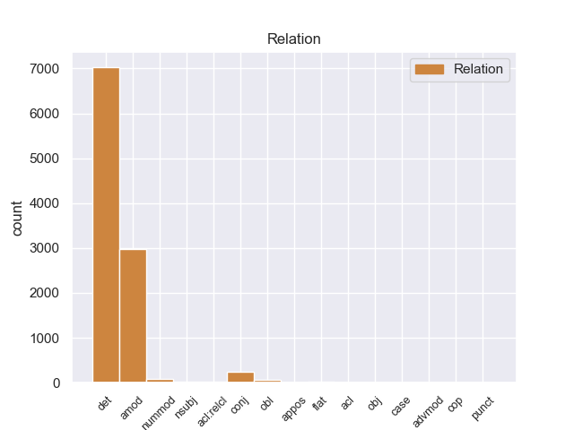
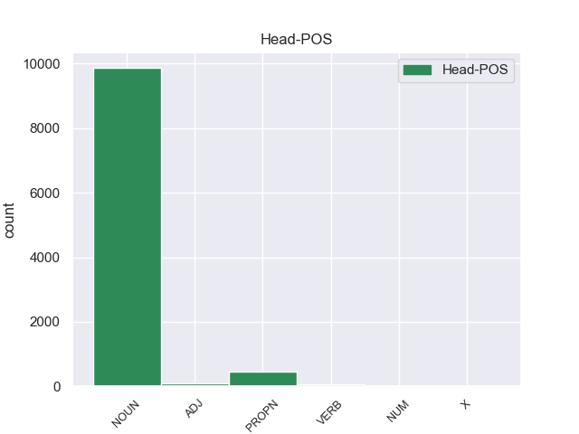
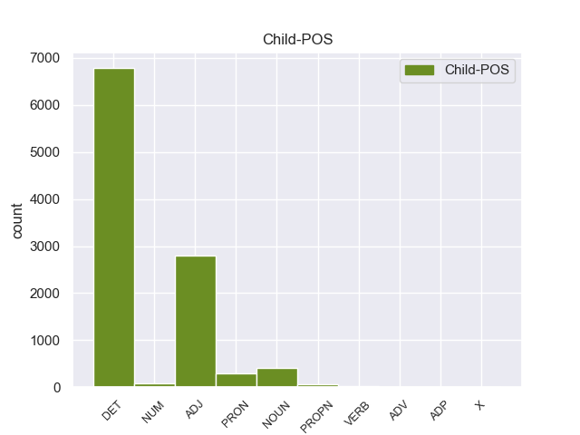

Distribution of features within this leaf



Agreement Rules sorted by frequency.
- When the dependent token is the determiner(det) of the head token, and the head token is NOUN and the dependent token is DET.
1 Αυτό _ _ _ _ 0 _ _ _
2 μπορεί _ _ _ _ 0 _ _ _
3 να _ _ _ _ 0 _ _ _
4 μην _ _ _ _ 0 _ _ _
5 οδηγήσει _ _ _ _ 0 _ _ _
6 σ _ _ _ _ 0 _ _ _
7 τη _ _ _ _ 0 _ _ _
8 λήξη _ _ _ _ 0 _ _ _
9 του _ _ _ _ 0 _ _ _
10 εν _ _ _ _ 0 _ _ _
11 λόγω _ _ _ _ 0 _ _ _
12 ζητήματος _ _ _ _ 0 _ _ _
13 αλλά _ _ _ _ 0 _ _ _
14 , _ _ _ _ 0 _ _ _
15 σ _ _ _ _ 0 _ _ _
16 τη _ _ _ _ 0 _ _ _
17 μορφή _ _ _ _ 0 _ _ _
18 υπό _ _ _ _ 0 _ _ _
19 την _ _ _ _ 0 _ _ _
20 οποία _ _ _ _ 0 _ _ _
21 την _ _ _ _ 0 _ _ _
22 λάβαμε _ _ _ _ 0 _ _ _
23 , _ _ _ _ 0 _ _ _
24 αυτή _ _ _ _ 0 _ _ _
25 η _ _ _ _ 0 _ _ _
26 αίτηση _ _ _ _ 0 _ _ _
27 άρσης _ _ _ _ 0 _ _ _
28 της _ _ _ _ 0 _ _ _
29 ασυλίας _ _ _ _ 0 _ _ _
30 ήταν _ _ _ _ 0 _ _ _
31 , _ _ _ _ 0 _ _ _
32 κατά _ _ _ _ 0 _ _ _
33 την _ _ _ _ 0 _ _ _
34 άποψη _ _ _ _ 0 _ _ _
35 της _ _ _ _ 0 _ _ _
36 Επιτροπής _ _ _ _ 0 _ _ _
37 Νομικών _ _ _ _ 0 _ _ _
38 Θεμάτων _ _ _ _ 0 _ _ _
39 , _ _ _ _ 0 _ _ _
40 απαράδεκτη _ _ _ _ 0 _ _ _
41 , _ _ _ _ 0 _ _ _
42 άποψη _ _ _ _ 0 _ _ _
43 την _ _ _ _ 0 _ _ _
44 οποία _ _ _ _ 0 _ _ _
45 συνιστώ _ _ _ _ 0 _ _ _
46 σ _ _ _ _ 0 _ _ _
47 το ο DET _ Case=Acc|Gender=Neut|Number=Sing 48 det _ _
48 Σώμα σώμα NOUN _ Case=Acc|Gender=Neut|Number=Sing 0 _ _ _
49 να _ _ _ _ 0 _ _ _
50 υιοθετήσει _ _ _ _ 0 _ _ _
51 . _ _ _ _ 0 _ _ _
1 Αυτό _ _ _ _ 0 _ _ _
2 μπορεί _ _ _ _ 0 _ _ _
3 να _ _ _ _ 0 _ _ _
4 μην _ _ _ _ 0 _ _ _
5 οδηγήσει _ _ _ _ 0 _ _ _
6 σ _ _ _ _ 0 _ _ _
7 τη _ _ _ _ 0 _ _ _
8 λήξη _ _ _ _ 0 _ _ _
9 του _ _ _ _ 0 _ _ _
10 εν _ _ _ _ 0 _ _ _
11 λόγω _ _ _ _ 0 _ _ _
12 ζητήματος _ _ _ _ 0 _ _ _
13 αλλά _ _ _ _ 0 _ _ _
14 , _ _ _ _ 0 _ _ _
15 σ _ _ _ _ 0 _ _ _
16 τη _ _ _ _ 0 _ _ _
17 μορφή _ _ _ _ 0 _ _ _
18 υπό _ _ _ _ 0 _ _ _
19 την _ _ _ _ 0 _ _ _
20 οποία _ _ _ _ 0 _ _ _
21 την _ _ _ _ 0 _ _ _
22 λάβαμε _ _ _ _ 0 _ _ _
23 , _ _ _ _ 0 _ _ _
24 αυτή _ _ _ _ 0 _ _ _
25 η _ _ _ _ 0 _ _ _
26 αίτηση _ _ _ _ 0 _ _ _
27 άρσης _ _ _ _ 0 _ _ _
28 της _ _ _ _ 0 _ _ _
29 ασυλίας _ _ _ _ 0 _ _ _
30 ήταν _ _ _ _ 0 _ _ _
31 , _ _ _ _ 0 _ _ _
32 κατά _ _ _ _ 0 _ _ _
33 την _ _ _ _ 0 _ _ _
34 άποψη _ _ _ _ 0 _ _ _
35 της _ _ _ _ 0 _ _ _
36 Επιτροπής _ _ _ _ 0 _ _ _
37 Νομικών _ _ _ _ 0 _ _ _
38 Θεμάτων _ _ _ _ 0 _ _ _
39 , _ _ _ _ 0 _ _ _
40 απαράδεκτη απαράδεκτη ADJ _ Case=Acc|Gender=Fem|Number=Sing 42 amod _ _
41 , _ _ _ _ 0 _ _ _
42 άποψη άποψη NOUN _ Case=Acc|Gender=Fem|Number=Sing 0 _ _ _
43 την _ _ _ _ 0 _ _ _
44 οποία _ _ _ _ 0 _ _ _
45 συνιστώ _ _ _ _ 0 _ _ _
46 σ _ _ _ _ 0 _ _ _
47 το _ _ _ _ 0 _ _ _
48 Σώμα _ _ _ _ 0 _ _ _
49 να _ _ _ _ 0 _ _ _
50 υιοθετήσει _ _ _ _ 0 _ _ _
51 . _ _ _ _ 0 _ _ _
1 Ο _ _ _ _ 0 _ _ _
2 Εισαγγελέας _ _ _ _ 0 _ _ _
3 σ _ _ _ _ 0 _ _ _
4 τη ο DET _ Case=Acc|Definite=Def|Gender=Fem|Number=Sing|PronType=Art 5 det _ _
5 Γαλλία γαλλία PROPN _ Case=Acc|Gender=Fem|Number=Sing 0 _ _ _
6 έχει _ _ _ _ 0 _ _ _
7 το _ _ _ _ 0 _ _ _
8 δικαίωμα _ _ _ _ 0 _ _ _
9 να _ _ _ _ 0 _ _ _
10 εκπληρώνει _ _ _ _ 0 _ _ _
11 τα _ _ _ _ 0 _ _ _
12 καθήκοντά _ _ _ _ 0 _ _ _
13 του _ _ _ _ 0 _ _ _
14 βάσει _ _ _ _ 0 _ _ _
15 του _ _ _ _ 0 _ _ _
16 νόμου _ _ _ _ 0 _ _ _
17 και _ _ _ _ 0 _ _ _
18 το _ _ _ _ 0 _ _ _
19 Σώμα _ _ _ _ 0 _ _ _
20 δεν _ _ _ _ 0 _ _ _
21 λαμβάνει _ _ _ _ 0 _ _ _
22 θέση _ _ _ _ 0 _ _ _
23 σχετικά _ _ _ _ 0 _ _ _
24 με _ _ _ _ 0 _ _ _
25 αυτό _ _ _ _ 0 _ _ _
26 . _ _ _ _ 0 _ _ _
1 Αυτό _ _ _ _ 0 _ _ _
2 μπορεί _ _ _ _ 0 _ _ _
3 να _ _ _ _ 0 _ _ _
4 μην _ _ _ _ 0 _ _ _
5 οδηγήσει _ _ _ _ 0 _ _ _
6 σ _ _ _ _ 0 _ _ _
7 τη _ _ _ _ 0 _ _ _
8 λήξη _ _ _ _ 0 _ _ _
9 του _ _ _ _ 0 _ _ _
10 εν _ _ _ _ 0 _ _ _
11 λόγω _ _ _ _ 0 _ _ _
12 ζητήματος _ _ _ _ 0 _ _ _
13 αλλά _ _ _ _ 0 _ _ _
14 , _ _ _ _ 0 _ _ _
15 σ _ _ _ _ 0 _ _ _
16 τη _ _ _ _ 0 _ _ _
17 μορφή _ _ _ _ 0 _ _ _
18 υπό _ _ _ _ 0 _ _ _
19 την _ _ _ _ 0 _ _ _
20 οποία _ _ _ _ 0 _ _ _
21 την _ _ _ _ 0 _ _ _
22 λάβαμε _ _ _ _ 0 _ _ _
23 , _ _ _ _ 0 _ _ _
24 αυτή αυτή PRON _ Case=Acc|Gender=Fem|Number=Sing|Person=3|PronType=Dem 26 det _ _
25 η _ _ _ _ 0 _ _ _
26 αίτηση αίτηση NOUN _ Case=Acc|Gender=Fem|Number=Sing 0 _ _ _
27 άρσης _ _ _ _ 0 _ _ _
28 της _ _ _ _ 0 _ _ _
29 ασυλίας _ _ _ _ 0 _ _ _
30 ήταν _ _ _ _ 0 _ _ _
31 , _ _ _ _ 0 _ _ _
32 κατά _ _ _ _ 0 _ _ _
33 την _ _ _ _ 0 _ _ _
34 άποψη _ _ _ _ 0 _ _ _
35 της _ _ _ _ 0 _ _ _
36 Επιτροπής _ _ _ _ 0 _ _ _
37 Νομικών _ _ _ _ 0 _ _ _
38 Θεμάτων _ _ _ _ 0 _ _ _
39 , _ _ _ _ 0 _ _ _
40 απαράδεκτη _ _ _ _ 0 _ _ _
41 , _ _ _ _ 0 _ _ _
42 άποψη _ _ _ _ 0 _ _ _
43 την _ _ _ _ 0 _ _ _
44 οποία _ _ _ _ 0 _ _ _
45 συνιστώ _ _ _ _ 0 _ _ _
46 σ _ _ _ _ 0 _ _ _
47 το _ _ _ _ 0 _ _ _
48 Σώμα _ _ _ _ 0 _ _ _
49 να _ _ _ _ 0 _ _ _
50 υιοθετήσει _ _ _ _ 0 _ _ _
51 . _ _ _ _ 0 _ _ _
1 Θα _ _ _ _ 0 _ _ _
2 ήθελα _ _ _ _ 0 _ _ _
3 να _ _ _ _ 0 _ _ _
4 επιστήσω _ _ _ _ 0 _ _ _
5 την _ _ _ _ 0 _ _ _
6 προσοχή _ _ _ _ 0 _ _ _
7 όλων _ _ _ _ 0 _ _ _
8 των _ _ _ _ 0 _ _ _
9 συναδέλφων _ _ _ _ 0 _ _ _
10 σ _ _ _ _ 0 _ _ _
11 το _ _ _ _ 0 _ _ _
12 γεγονός _ _ _ _ 0 _ _ _
13 ότι _ _ _ _ 0 _ _ _
14 , _ _ _ _ 0 _ _ _
15 εάν _ _ _ _ 0 _ _ _
16 υπάρχουν _ _ _ _ 0 _ _ _
17 κάποιες _ _ _ _ 0 _ _ _
18 ελευθερίες _ _ _ _ 0 _ _ _
19 οι _ _ _ _ 0 _ _ _
20 οποίες _ _ _ _ 0 _ _ _
21 είναι _ _ _ _ 0 _ _ _
22 ζωτικής _ _ _ _ 0 _ _ _
23 σημασίας σημασίας NOUN _ Case=Acc|Gender=Fem|Number=Sing 0 _ _ _
24 για _ _ _ _ 0 _ _ _
25 την _ _ _ _ 0 _ _ _
26 άσκηση _ _ _ _ 0 _ _ _
27 του _ _ _ _ 0 _ _ _
28 λειτουργήματος _ _ _ _ 0 _ _ _
29 της _ _ _ _ 0 _ _ _
30 δημόσιας _ _ _ _ 0 _ _ _
31 εκπροσώπησης _ _ _ _ 0 _ _ _
32 , _ _ _ _ 0 _ _ _
33 ιδίως _ _ _ _ 0 _ _ _
34 για _ _ _ _ 0 _ _ _
35 ένα _ _ _ _ 0 _ _ _
36 Κοινοβούλιο _ _ _ _ 0 _ _ _
37 σαν _ _ _ _ 0 _ _ _
38 το _ _ _ _ 0 _ _ _
39 δικό _ _ _ _ 0 _ _ _
40 μας _ _ _ _ 0 _ _ _
41 , _ _ _ _ 0 _ _ _
42 η _ _ _ _ 0 _ _ _
43 ελευθερία _ _ _ _ 0 _ _ _
44 της _ _ _ _ 0 _ _ _
45 επικοινωνίας _ _ _ _ 0 _ _ _
46 με _ _ _ _ 0 _ _ _
47 άλλους _ _ _ _ 0 _ _ _
48 πολίτες _ _ _ _ 0 _ _ _
49 και _ _ _ _ 0 _ _ _
50 με _ _ _ _ 0 _ _ _
51 τους _ _ _ _ 0 _ _ _
52 πολίτες _ _ _ _ 0 _ _ _
53 τρίτων _ _ _ _ 0 _ _ _
54 χωρών _ _ _ _ 0 _ _ _
55 , _ _ _ _ 0 _ _ _
56 καθώς _ _ _ _ 0 _ _ _
57 και _ _ _ _ 0 _ _ _
58 η _ _ _ _ 0 _ _ _
59 ελευθερία ελευθερία NOUN _ Case=Acc|Gender=Fem|Number=Sing 23 conj _ _
60 μετακίνησης _ _ _ _ 0 _ _ _
61 , _ _ _ _ 0 _ _ _
62 είναι _ _ _ _ 0 _ _ _
63 κρίσιμες _ _ _ _ 0 _ _ _
64 για _ _ _ _ 0 _ _ _
65 τη _ _ _ _ 0 _ _ _
66 διεκπεραίωση _ _ _ _ 0 _ _ _
67 του _ _ _ _ 0 _ _ _
68 έργου _ _ _ _ 0 _ _ _
69 μας _ _ _ _ 0 _ _ _
70 . _ _ _ _ 0 _ _ _
1 Θα _ _ _ _ 0 _ _ _
2 ήθελα _ _ _ _ 0 _ _ _
3 να _ _ _ _ 0 _ _ _
4 επιστήσω _ _ _ _ 0 _ _ _
5 την _ _ _ _ 0 _ _ _
6 προσοχή _ _ _ _ 0 _ _ _
7 όλων _ _ _ _ 0 _ _ _
8 των _ _ _ _ 0 _ _ _
9 συναδέλφων _ _ _ _ 0 _ _ _
10 σ _ _ _ _ 0 _ _ _
11 το _ _ _ _ 0 _ _ _
12 γεγονός _ _ _ _ 0 _ _ _
13 ότι _ _ _ _ 0 _ _ _
14 , _ _ _ _ 0 _ _ _
15 εάν _ _ _ _ 0 _ _ _
16 υπάρχουν _ _ _ _ 0 _ _ _
17 κάποιες _ _ _ _ 0 _ _ _
18 ελευθερίες _ _ _ _ 0 _ _ _
19 οι _ _ _ _ 0 _ _ _
20 οποίες _ _ _ _ 0 _ _ _
21 είναι _ _ _ _ 0 _ _ _
22 ζωτικής _ _ _ _ 0 _ _ _
23 σημασίας _ _ _ _ 0 _ _ _
24 για _ _ _ _ 0 _ _ _
25 την _ _ _ _ 0 _ _ _
26 άσκηση _ _ _ _ 0 _ _ _
27 του _ _ _ _ 0 _ _ _
28 λειτουργήματος _ _ _ _ 0 _ _ _
29 της _ _ _ _ 0 _ _ _
30 δημόσιας _ _ _ _ 0 _ _ _
31 εκπροσώπησης _ _ _ _ 0 _ _ _
32 , _ _ _ _ 0 _ _ _
33 ιδίως _ _ _ _ 0 _ _ _
34 για _ _ _ _ 0 _ _ _
35 ένα _ _ _ _ 0 _ _ _
36 Κοινοβούλιο Κοινοβούλιο NOUN _ Case=Acc|Gender=Neut|Number=Sing 0 _ _ _
37 σαν _ _ _ _ 0 _ _ _
38 το _ _ _ _ 0 _ _ _
39 δικό δικό NOUN _ Case=Acc|Gender=Neut|Number=Sing 36 amod _ _
40 μας _ _ _ _ 0 _ _ _
41 , _ _ _ _ 0 _ _ _
42 η _ _ _ _ 0 _ _ _
43 ελευθερία _ _ _ _ 0 _ _ _
44 της _ _ _ _ 0 _ _ _
45 επικοινωνίας _ _ _ _ 0 _ _ _
46 με _ _ _ _ 0 _ _ _
47 άλλους _ _ _ _ 0 _ _ _
48 πολίτες _ _ _ _ 0 _ _ _
49 και _ _ _ _ 0 _ _ _
50 με _ _ _ _ 0 _ _ _
51 τους _ _ _ _ 0 _ _ _
52 πολίτες _ _ _ _ 0 _ _ _
53 τρίτων _ _ _ _ 0 _ _ _
54 χωρών _ _ _ _ 0 _ _ _
55 , _ _ _ _ 0 _ _ _
56 καθώς _ _ _ _ 0 _ _ _
57 και _ _ _ _ 0 _ _ _
58 η _ _ _ _ 0 _ _ _
59 ελευθερία _ _ _ _ 0 _ _ _
60 μετακίνησης _ _ _ _ 0 _ _ _
61 , _ _ _ _ 0 _ _ _
62 είναι _ _ _ _ 0 _ _ _
63 κρίσιμες _ _ _ _ 0 _ _ _
64 για _ _ _ _ 0 _ _ _
65 τη _ _ _ _ 0 _ _ _
66 διεκπεραίωση _ _ _ _ 0 _ _ _
67 του _ _ _ _ 0 _ _ _
68 έργου _ _ _ _ 0 _ _ _
69 μας _ _ _ _ 0 _ _ _
70 . _ _ _ _ 0 _ _ _
1 Είναι _ _ _ _ 0 _ _ _
2 σημαντικό _ _ _ _ 0 _ _ _
3 να _ _ _ _ 0 _ _ _
4 υπογραμμίσω _ _ _ _ 0 _ _ _
5 το _ _ _ _ 0 _ _ _
6 γεγονός _ _ _ _ 0 _ _ _
7 ότι _ _ _ _ 0 _ _ _
8 και _ _ _ _ 0 _ _ _
9 οι _ _ _ _ 0 _ _ _
10 δύο δος NUM _ Case=Nom|Gender=Fem|Number=Plur 11 nummod _ _
11 βουλευτές βουλευτα NOUN _ Case=Nom|Gender=Fem|Number=Plur 0 _ _ _
12 διατρανώνουν _ _ _ _ 0 _ _ _
13 σθεναρά _ _ _ _ 0 _ _ _
14 την _ _ _ _ 0 _ _ _
15 αθωότητά _ _ _ _ 0 _ _ _
16 τους _ _ _ _ 0 _ _ _
17 και _ _ _ _ 0 _ _ _
18 καταγγέλλουν _ _ _ _ 0 _ _ _
19 αυτό _ _ _ _ 0 _ _ _
20 που _ _ _ _ 0 _ _ _
21 οι _ _ _ _ 0 _ _ _
22 ίδιοι _ _ _ _ 0 _ _ _
23 θεωρούν _ _ _ _ 0 _ _ _
24 καταχρήσεις _ _ _ _ 0 _ _ _
25 σ _ _ _ _ 0 _ _ _
26 τη _ _ _ _ 0 _ _ _
27 διαδικασία _ _ _ _ 0 _ _ _
28 δίωξης _ _ _ _ 0 _ _ _
29 . _ _ _ _ 0 _ _ _
1 Επίσης _ _ _ _ 0 _ _ _
2 καταδικάστηκαν _ _ _ _ 0 _ _ _
3 , _ _ _ _ 0 _ _ _
4 σε _ _ _ _ 0 _ _ _
5 18 _ _ _ _ 0 _ _ _
6 μήνες _ _ _ _ 0 _ _ _
7 φυλάκιση _ _ _ _ 0 _ _ _
8 , _ _ _ _ 0 _ _ _
9 ένας _ _ _ _ 0 _ _ _
10 αξιωματούχος _ _ _ _ 0 _ _ _
11 του _ _ _ _ 0 _ _ _
12 Γραφείου _ _ _ _ 0 _ _ _
13 Τύπου _ _ _ _ 0 _ _ _
14 των ο DET _ Case=Gen|Definite=Def|Gender=Fem|Number=Plur|PronType=Art 15 det _ _
15 Βαλεαρίδων βαλεαρίδός ADJ _ Case=Gen|Gender=Fem|Number=Sing 0 _ _ _
16 Νήσων _ _ _ _ 0 _ _ _
17 και _ _ _ _ 0 _ _ _
18 ένας _ _ _ _ 0 _ _ _
19 επικεφαλής _ _ _ _ 0 _ _ _
20 μιας _ _ _ _ 0 _ _ _
21 υπηρεσίας _ _ _ _ 0 _ _ _
22 εποικονωνίας _ _ _ _ 0 _ _ _
23 . _ _ _ _ 0 _ _ _
1 Παρόμοιο _ _ _ _ 0 _ _ _
2 καθεστώς _ _ _ _ 0 _ _ _
3 επιδιώκουν _ _ _ _ 0 _ _ _
4 και _ _ _ _ 0 _ _ _
5 οι _ _ _ _ 0 _ _ _
6 πόλεις _ _ _ _ 0 _ _ _
7 σ _ _ _ _ 0 _ _ _
8 τα _ _ _ _ 0 _ _ _
9 ανατολικά _ _ _ _ 0 _ _ _
10 της _ _ _ _ 0 _ _ _
11 Λιβύης _ _ _ _ 0 _ _ _
12 , _ _ _ _ 0 _ _ _
13 οι _ _ _ _ 0 _ _ _
14 οποίες _ _ _ _ 0 _ _ _
15 είναι _ _ _ _ 0 _ _ _
16 πλούσιες πλούσιες VERB _ Case=Nom|Gender=Fem|Number=Plur 0 _ _ _
17 σε _ _ _ _ 0 _ _ _
18 κοιτάσματα κοιτάσματα NOUN _ Case=Acc|Gender=Fem|Number=Plur 16 obl _ _
19 πετρελαίου _ _ _ _ 0 _ _ _
20 . _ _ _ _ 0 _ _ _
1 Σημαντικό _ _ _ _ 0 _ _ _
2 είναι _ _ _ _ 0 _ _ _
3 και _ _ _ _ 0 _ _ _
4 το _ _ _ _ 0 _ _ _
5 αρχαιολογικό _ _ _ _ 0 _ _ _
6 μουσείο _ _ _ _ 0 _ _ _
7 Κέρκυρας _ _ _ _ 0 _ _ _
8 , _ _ _ _ 0 _ _ _
9 σ _ _ _ _ 0 _ _ _
10 το _ _ _ _ 0 _ _ _
11 οποίο _ _ _ _ 0 _ _ _
12 φιλοξενούνται _ _ _ _ 0 _ _ _
13 ευρήματα _ _ _ _ 0 _ _ _
14 από _ _ _ _ 0 _ _ _
15 ανασκαφές _ _ _ _ 0 _ _ _
16 σ _ _ _ _ 0 _ _ _
17 την _ _ _ _ 0 _ _ _
18 Κέρκυρα Κέρκυρα PROPN _ Case=Acc|Gender=Fem|Number=Sing 0 _ _ _
19 και _ _ _ _ 0 _ _ _
20 τη _ _ _ _ 0 _ _ _
21 Θεσπρωτία Θεσπρωτία PROPN _ Case=Acc|Gender=Fem|Number=Sing 18 conj _ _
22 και _ _ _ _ 0 _ _ _
23 το _ _ _ _ 0 _ _ _
24 σπίτι _ _ _ _ 0 _ _ _
25 του _ _ _ _ 0 _ _ _
26 Διονυσίου _ _ _ _ 0 _ _ _
27 Σολωμού _ _ _ _ 0 _ _ _
28 , _ _ _ _ 0 _ _ _
29 το _ _ _ _ 0 _ _ _
30 οποίο _ _ _ _ 0 _ _ _
31 λειτουργεί _ _ _ _ 0 _ _ _
32 ως _ _ _ _ 0 _ _ _
33 μουσείο _ _ _ _ 0 _ _ _
34 . _ _ _ _ 0 _ _ _
1 Η _ _ _ _ 0 _ _ _
2 Μονή _ _ _ _ 0 _ _ _
3 αποτελεί _ _ _ _ 0 _ _ _
4 ένα _ _ _ _ 0 _ _ _
5 από _ _ _ _ 0 _ _ _
6 τα _ _ _ _ 0 _ _ _
7 πιο _ _ _ _ 0 _ _ _
8 αξιόλογα _ _ _ _ 0 _ _ _
9 μνημεία _ _ _ _ 0 _ _ _
10 των _ _ _ _ 0 _ _ _
11 Βόρειων _ _ _ _ 0 _ _ _
12 Σποράδων _ _ _ _ 0 _ _ _
13 καθώς _ _ _ _ 0 _ _ _
14 σώζονται _ _ _ _ 0 _ _ _
15 το _ _ _ _ 0 _ _ _
16 καθολικό _ _ _ _ 0 _ _ _
17 - _ _ _ _ 0 _ _ _
18 σταυροειδής _ _ _ _ 0 _ _ _
19 τετρακίονος _ _ _ _ 0 _ _ _
20 με _ _ _ _ 0 _ _ _
21 τρούλλο _ _ _ _ 0 _ _ _
22 - _ _ _ _ 0 _ _ _
23 , _ _ _ _ 0 _ _ _
24 σημαντικές _ _ _ _ 0 _ _ _
25 τοιχογραφίες _ _ _ _ 0 _ _ _
26 του _ _ _ _ 0 _ _ _
27 18ου 18ου NUM _ Case=Gen|Gender=Fem|Number=Sing 28 amod _ _
28 αιώνα αιώνα NOUN _ Case=Gen|Gender=Fem|Number=Sing 0 _ _ _
29 , _ _ _ _ 0 _ _ _
30 η _ _ _ _ 0 _ _ _
31 εστία _ _ _ _ 0 _ _ _
32 , _ _ _ _ 0 _ _ _
33 ο _ _ _ _ 0 _ _ _
34 κλίβανος _ _ _ _ 0 _ _ _
35 και _ _ _ _ 0 _ _ _
36 τα _ _ _ _ 0 _ _ _
37 ημιερειπωμένα _ _ _ _ 0 _ _ _
38 κελιά _ _ _ _ 0 _ _ _
39 της _ _ _ _ 0 _ _ _
40 νότιας _ _ _ _ 0 _ _ _
41 πτέρυγας _ _ _ _ 0 _ _ _
42 . _ _ _ _ 0 _ _ _
1 Η _ _ _ _ 0 _ _ _
2 Κυβέρνηση _ _ _ _ 0 _ _ _
3 της _ _ _ _ 0 _ _ _
4 Βόρειας Βόρειας ADJ _ Case=Gen|Gender=Fem|Number=Sing 5 amod _ _
5 Κορέας Κορέας PROPN _ Case=Gen|Gender=Fem|Number=Sing 0 _ _ _
6 απαγορεύει _ _ _ _ 0 _ _ _
7 σ _ _ _ _ 0 _ _ _
8 την _ _ _ _ 0 _ _ _
9 πλειοψηφία _ _ _ _ 0 _ _ _
10 των _ _ _ _ 0 _ _ _
11 πολιτών _ _ _ _ 0 _ _ _
12 να _ _ _ _ 0 _ _ _
13 έχουν _ _ _ _ 0 _ _ _
14 πρόσβαση _ _ _ _ 0 _ _ _
15 σ _ _ _ _ 0 _ _ _
16 το _ _ _ _ 0 _ _ _
17 διαδίκτυο _ _ _ _ 0 _ _ _
18 , _ _ _ _ 0 _ _ _
19 για _ _ _ _ 0 _ _ _
20 να _ _ _ _ 0 _ _ _
21 τους _ _ _ _ 0 _ _ _
22 προστατέψει _ _ _ _ 0 _ _ _
23 , _ _ _ _ 0 _ _ _
24 όπως _ _ _ _ 0 _ _ _
25 αναφέρει _ _ _ _ 0 _ _ _
26 , _ _ _ _ 0 _ _ _
27 από _ _ _ _ 0 _ _ _
28 τις _ _ _ _ 0 _ _ _
29 εξωτερικές _ _ _ _ 0 _ _ _
30 επιρροές _ _ _ _ 0 _ _ _
31 . _ _ _ _ 0 _ _ _
1 Κύριε _ _ _ _ 0 _ _ _
2 Πρόεδρε _ _ _ _ 0 _ _ _
3 , _ _ _ _ 0 _ _ _
4 σας _ _ _ _ 0 _ _ _
5 είμαι _ _ _ _ 0 _ _ _
6 εξαιρετικά _ _ _ _ 0 _ _ _
7 ευγνώμων _ _ _ _ 0 _ _ _
8 για _ _ _ _ 0 _ _ _
9 το _ _ _ _ 0 _ _ _
10 ότι _ _ _ _ 0 _ _ _
11 ταχθήκατε _ _ _ _ 0 _ _ _
12 υπέρ _ _ _ _ 0 _ _ _
13 της _ _ _ _ 0 _ _ _
14 πρότασης _ _ _ _ 0 _ _ _
15 να _ _ _ _ 0 _ _ _
16 προσκαλέσουμε _ _ _ _ 0 _ _ _
17 σ _ _ _ _ 0 _ _ _
18 το _ _ _ _ 0 _ _ _
19 Ευρωπαϊκό _ _ _ _ 0 _ _ _
20 Κοινοβούλιο _ _ _ _ 0 _ _ _
21 , _ _ _ _ 0 _ _ _
22 σ _ _ _ _ 0 _ _ _
23 τις _ _ _ _ 0 _ _ _
24 Ομάδες _ _ _ _ 0 _ _ _
25 μας _ _ _ _ 0 _ _ _
26 , _ _ _ _ 0 _ _ _
27 παρατηρητές παρατηρητές NOUN _ Case=Acc|Gender=Fem|Number=Plur 0 _ _ _
28 από _ _ _ _ 0 _ _ _
29 τις _ _ _ _ 0 _ _ _
30 υποψήφιες υποψήφιες NOUN _ Case=Acc|Gender=Fem|Number=Plur 27 obl _ _
31 για _ _ _ _ 0 _ _ _
32 ένταξη _ _ _ _ 0 _ _ _
33 χώρες _ _ _ _ 0 _ _ _
34 μετά _ _ _ _ 0 _ _ _
35 από _ _ _ _ 0 _ _ _
36 την _ _ _ _ 0 _ _ _
37 υπογραφή _ _ _ _ 0 _ _ _
38 των _ _ _ _ 0 _ _ _
39 συνθηκών _ _ _ _ 0 _ _ _
40 . _ _ _ _ 0 _ _ _
1 Πρόκειται _ _ _ _ 0 _ _ _
2 για _ _ _ _ 0 _ _ _
3 ένα _ _ _ _ 0 _ _ _
4 μεγάλο _ _ _ _ 0 _ _ _
5 επίτευγμα _ _ _ _ 0 _ _ _
6 σχετικά _ _ _ _ 0 _ _ _
7 με _ _ _ _ 0 _ _ _
8 την _ _ _ _ 0 _ _ _
9 οδική _ _ _ _ 0 _ _ _
10 ασφάλεια _ _ _ _ 0 _ _ _
11 , _ _ _ _ 0 _ _ _
12 δεδομένου _ _ _ _ 0 _ _ _
13 ότι _ _ _ _ 0 _ _ _
14 η _ _ _ _ 0 _ _ _
15 κούραση _ _ _ _ 0 _ _ _
16 προφανώς _ _ _ _ 0 _ _ _
17 επηρεάζει _ _ _ _ 0 _ _ _
18 όλους _ _ _ _ 0 _ _ _
19 τους _ _ _ _ 0 _ _ _
20 οδηγούς _ _ _ _ 0 _ _ _
21 με _ _ _ _ 0 _ _ _
22 τον _ _ _ _ 0 _ _ _
23 ίδιο ίδιος PRON _ Case=Acc|Gender=Masc|Number=Sing 24 amod _ _
24 τρόπο τρόπος NOUN _ Case=Acc|Gender=Masc|Number=Sing 0 _ _ _
25 , _ _ _ _ 0 _ _ _
26 είτε _ _ _ _ 0 _ _ _
27 εργάζονται _ _ _ _ 0 _ _ _
28 σε _ _ _ _ 0 _ _ _
29 επιχείρηση _ _ _ _ 0 _ _ _
30 είτε _ _ _ _ 0 _ _ _
31 αυτοαπασχολούνται _ _ _ _ 0 _ _ _
32 . _ _ _ _ 0 _ _ _
1 Η _ _ _ _ 0 _ _ _
2 Μπενφίκα _ _ _ _ 0 _ _ _
3 ήταν _ _ _ _ 0 _ _ _
4 πιο _ _ _ _ 0 _ _ _
5 επιθετική επιθετική ADJ _ Case=Nom|Gender=Fem|Number=Sing 0 _ _ _
6 και _ _ _ _ 0 _ _ _
7 καλύτερη καλύτερη ADJ _ Case=Nom|Gender=Fem|Number=Sing 5 conj _ _
8 σ _ _ _ _ 0 _ _ _
9 το _ _ _ _ 0 _ _ _
10 πρώτο _ _ _ _ 0 _ _ _
11 ημίχρονο _ _ _ _ 0 _ _ _
12 , _ _ _ _ 0 _ _ _
13 με _ _ _ _ 0 _ _ _
14 αποτέλεσμα _ _ _ _ 0 _ _ _
15 να _ _ _ _ 0 _ _ _
16 ανοίξει _ _ _ _ 0 _ _ _
17 το _ _ _ _ 0 _ _ _
18 σκορ _ _ _ _ 0 _ _ _
19 σ _ _ _ _ 0 _ _ _
20 το _ _ _ _ 0 _ _ _
21 πρώτο _ _ _ _ 0 _ _ _
22 λεπτό _ _ _ _ 0 _ _ _
23 των _ _ _ _ 0 _ _ _
24 καθυστερήσεων _ _ _ _ 0 _ _ _
25 , _ _ _ _ 0 _ _ _
26 χάρη _ _ _ _ 0 _ _ _
27 σ _ _ _ _ 0 _ _ _
28 τον _ _ _ _ 0 _ _ _
29 Μάξι _ _ _ _ 0 _ _ _
30 Περέιρα _ _ _ _ 0 _ _ _
31 . _ _ _ _ 0 _ _ _
1 Η _ _ _ _ 0 _ _ _
2 εν _ _ _ _ 0 _ _ _
3 λόγω λόγω DET _ Case=Acc|Gender=Fem|Number=Sing 4 amod _ _
4 κοινοποίηση κοινοποίηση NOUN _ Case=Nom|Gender=Fem|Number=Sing 0 _ _ _
5 διαβιβάστηκε _ _ _ _ 0 _ _ _
6 αρχικά _ _ _ _ 0 _ _ _
7 σ _ _ _ _ 0 _ _ _
8 τον _ _ _ _ 0 _ _ _
9 Εισαγγελέα _ _ _ _ 0 _ _ _
10 Πλημμελειοδικών _ _ _ _ 0 _ _ _
11 , _ _ _ _ 0 _ _ _
12 κατόπιν _ _ _ _ 0 _ _ _
13 σ _ _ _ _ 0 _ _ _
14 τον _ _ _ _ 0 _ _ _
15 Εισαγγελέα _ _ _ _ 0 _ _ _
16 Εφετών _ _ _ _ 0 _ _ _
17 του _ _ _ _ 0 _ _ _
18 Παρισιού _ _ _ _ 0 _ _ _
19 , _ _ _ _ 0 _ _ _
20 ο _ _ _ _ 0 _ _ _
21 οποίος _ _ _ _ 0 _ _ _
22 και _ _ _ _ 0 _ _ _
23 την _ _ _ _ 0 _ _ _
24 απέστειλε _ _ _ _ 0 _ _ _
25 σ _ _ _ _ 0 _ _ _
26 τον _ _ _ _ 0 _ _ _
27 Υπουργό _ _ _ _ 0 _ _ _
28 Δικαιοσύνης _ _ _ _ 0 _ _ _
29 και _ _ _ _ 0 _ _ _
30 μέσω _ _ _ _ 0 _ _ _
31 αυτού _ _ _ _ 0 _ _ _
32 διαβιβάστηκε _ _ _ _ 0 _ _ _
33 σ _ _ _ _ 0 _ _ _
34 το _ _ _ _ 0 _ _ _
35 Ευρωπαϊκό _ _ _ _ 0 _ _ _
36 Κοινοβούλιο _ _ _ _ 0 _ _ _
37 . _ _ _ _ 0 _ _ _
1 Αυτό _ _ _ _ 0 _ _ _
2 μπορεί _ _ _ _ 0 _ _ _
3 να _ _ _ _ 0 _ _ _
4 μην _ _ _ _ 0 _ _ _
5 οδηγήσει _ _ _ _ 0 _ _ _
6 σ _ _ _ _ 0 _ _ _
7 τη _ _ _ _ 0 _ _ _
8 λήξη _ _ _ _ 0 _ _ _
9 του _ _ _ _ 0 _ _ _
10 εν _ _ _ _ 0 _ _ _
11 λόγω _ _ _ _ 0 _ _ _
12 ζητήματος _ _ _ _ 0 _ _ _
13 αλλά _ _ _ _ 0 _ _ _
14 , _ _ _ _ 0 _ _ _
15 σ _ _ _ _ 0 _ _ _
16 τη _ _ _ _ 0 _ _ _
17 μορφή μορφή NOUN _ Case=Acc|Gender=Fem|Number=Sing 0 _ _ _
18 υπό _ _ _ _ 0 _ _ _
19 την _ _ _ _ 0 _ _ _
20 οποία _ _ _ _ 0 _ _ _
21 την _ _ _ _ 0 _ _ _
22 λάβαμε λάβαμε VERB _ Case=Acc|Gender=Fem|Number=Sing 17 acl:relcl _ _
23 , _ _ _ _ 0 _ _ _
24 αυτή _ _ _ _ 0 _ _ _
25 η _ _ _ _ 0 _ _ _
26 αίτηση _ _ _ _ 0 _ _ _
27 άρσης _ _ _ _ 0 _ _ _
28 της _ _ _ _ 0 _ _ _
29 ασυλίας _ _ _ _ 0 _ _ _
30 ήταν _ _ _ _ 0 _ _ _
31 , _ _ _ _ 0 _ _ _
32 κατά _ _ _ _ 0 _ _ _
33 την _ _ _ _ 0 _ _ _
34 άποψη _ _ _ _ 0 _ _ _
35 της _ _ _ _ 0 _ _ _
36 Επιτροπής _ _ _ _ 0 _ _ _
37 Νομικών _ _ _ _ 0 _ _ _
38 Θεμάτων _ _ _ _ 0 _ _ _
39 , _ _ _ _ 0 _ _ _
40 απαράδεκτη _ _ _ _ 0 _ _ _
41 , _ _ _ _ 0 _ _ _
42 άποψη _ _ _ _ 0 _ _ _
43 την _ _ _ _ 0 _ _ _
44 οποία _ _ _ _ 0 _ _ _
45 συνιστώ _ _ _ _ 0 _ _ _
46 σ _ _ _ _ 0 _ _ _
47 το _ _ _ _ 0 _ _ _
48 Σώμα _ _ _ _ 0 _ _ _
49 να _ _ _ _ 0 _ _ _
50 υιοθετήσει _ _ _ _ 0 _ _ _
51 . _ _ _ _ 0 _ _ _
1 Έχουμε _ _ _ _ 0 _ _ _
2 την _ _ _ _ 0 _ _ _
3 απαρέγκλιτη _ _ _ _ 0 _ _ _
4 αρχή _ _ _ _ 0 _ _ _
5 να _ _ _ _ 0 _ _ _
6 μην _ _ _ _ 0 _ _ _
7 διαμορφώνουμε _ _ _ _ 0 _ _ _
8 οποιαδήποτε οποιαδήποτε ADJ _ Case=Acc|Gender=Fem|Number=Sing 9 det _ _
9 γνώμη γνώμη NOUN _ Case=Acc|Gender=Fem|Number=Sing 0 _ _ _
10 σχετικά _ _ _ _ 0 _ _ _
11 με _ _ _ _ 0 _ _ _
12 την _ _ _ _ 0 _ _ _
13 ουσία _ _ _ _ 0 _ _ _
14 των _ _ _ _ 0 _ _ _
15 κατηγοριών _ _ _ _ 0 _ _ _
16 , _ _ _ _ 0 _ _ _
17 αλλά _ _ _ _ 0 _ _ _
18 να _ _ _ _ 0 _ _ _
19 θεωρούμε _ _ _ _ 0 _ _ _
20 ότι _ _ _ _ 0 _ _ _
21 οι _ _ _ _ 0 _ _ _
22 βουλευτές _ _ _ _ 0 _ _ _
23 απολαύουν _ _ _ _ 0 _ _ _
24 του _ _ _ _ 0 _ _ _
25 τεκμηρίου _ _ _ _ 0 _ _ _
26 της _ _ _ _ 0 _ _ _
27 αθωότητας _ _ _ _ 0 _ _ _
28 . _ _ _ _ 0 _ _ _
1 Κυρίες _ _ _ _ 0 _ _ _
2 και _ _ _ _ 0 _ _ _
3 κύριοι _ _ _ _ 0 _ _ _
4 , _ _ _ _ 0 _ _ _
5 δεν _ _ _ _ 0 _ _ _
6 αντιλαμβανόμαστε _ _ _ _ 0 _ _ _
7 τη _ _ _ _ 0 _ _ _
8 Συνέλευση _ _ _ _ 0 _ _ _
9 ως _ _ _ _ 0 _ _ _
10 μια _ _ _ _ 0 _ _ _
11 μάχη _ _ _ _ 0 _ _ _
12 μεταξύ _ _ _ _ 0 _ _ _
13 κομμάτων _ _ _ _ 0 _ _ _
14 και _ _ _ _ 0 _ _ _
15 εδώ _ _ _ _ 0 _ _ _
16 πρέπει _ _ _ _ 0 _ _ _
17 να _ _ _ _ 0 _ _ _
18 επισημάνω _ _ _ _ 0 _ _ _
19 ότι _ _ _ _ 0 _ _ _
20 ο _ _ _ _ 0 _ _ _
21 κ. _ _ _ _ 0 _ _ _
22 Berlusconi _ _ _ _ 0 _ _ _
23 , _ _ _ _ 0 _ _ _
24 σ _ _ _ _ 0 _ _ _
25 τη _ _ _ _ 0 _ _ _
26 " _ _ _ _ 0 _ _ _
27 Le _ _ _ _ 0 _ _ _
28 Monde _ _ _ _ 0 _ _ _
29 " _ _ _ _ 0 _ _ _
30 της ο DET _ Case=Gen|Definite=Def|Gender=Fem|Number=Sing|PronType=Art 31 det _ _
31 12ης_Ιανουαρίου 12ης_ιανουαρίου NUM _ Case=Gen|Gender=Fem|Number=Sing 0 _ _ _
32 , _ _ _ _ 0 _ _ _
33 είπε _ _ _ _ 0 _ _ _
34 ότι _ _ _ _ 0 _ _ _
35 εμείς _ _ _ _ 0 _ _ _
36 είμαστε _ _ _ _ 0 _ _ _
37 υπέρ _ _ _ _ 0 _ _ _
38 του _ _ _ _ 0 _ _ _
39 συγκεντρωτισμού _ _ _ _ 0 _ _ _
40 των _ _ _ _ 0 _ _ _
41 πάντων _ _ _ _ 0 _ _ _
42 . _ _ _ _ 0 _ _ _
1 Ο _ _ _ _ 0 _ _ _
2 πρώην _ _ _ _ 0 _ _ _
3 συμβασιούχος _ _ _ _ 0 _ _ _
4 της _ _ _ _ 0 _ _ _
5 αμερικανικής _ _ _ _ 0 _ _ _
6 Υπηρεσίας _ _ _ _ 0 _ _ _
7 Εθνικής _ _ _ _ 0 _ _ _
8 Ασφάλειας _ _ _ _ 0 _ _ _
9 , _ _ _ _ 0 _ _ _
10 Έντουαρντ _ _ _ _ 0 _ _ _
11 Σνόουντεν _ _ _ _ 0 _ _ _
12 , _ _ _ _ 0 _ _ _
13 επιδιώκει _ _ _ _ 0 _ _ _
14 προσωρινό _ _ _ _ 0 _ _ _
15 άσυλο _ _ _ _ 0 _ _ _
16 σ _ _ _ _ 0 _ _ _
17 τη _ _ _ _ 0 _ _ _
18 Ρωσία _ _ _ _ 0 _ _ _
19 , _ _ _ _ 0 _ _ _
20 έως _ _ _ _ 0 _ _ _
21 ότου _ _ _ _ 0 _ _ _
22 μπορέσει _ _ _ _ 0 _ _ _
23 να _ _ _ _ 0 _ _ _
24 ταξιδέψει _ _ _ _ 0 _ _ _
25 σ _ _ _ _ 0 _ _ _
26 τη _ _ _ _ 0 _ _ _
27 Λατινική Λατινική PROPN _ Case=Acc|Gender=Fem|Number=Sing 28 amod _ _
28 Αμερική Αμερική NOUN _ Case=Acc|Gender=Fem|Number=Sing 0 _ _ _
29 και _ _ _ _ 0 _ _ _
30 το _ _ _ _ 0 _ _ _
31 Κρεμλίνο _ _ _ _ 0 _ _ _
32 έχει _ _ _ _ 0 _ _ _
33 αφήσει _ _ _ _ 0 _ _ _
34 να _ _ _ _ 0 _ _ _
35 εννοηθεί _ _ _ _ 0 _ _ _
36 ότι _ _ _ _ 0 _ _ _
37 ενδεχομένως _ _ _ _ 0 _ _ _
38 να _ _ _ _ 0 _ _ _
39 του _ _ _ _ 0 _ _ _
40 επιτρέψει _ _ _ _ 0 _ _ _
41 να _ _ _ _ 0 _ _ _
42 παραμείνει _ _ _ _ 0 _ _ _
43 σ _ _ _ _ 0 _ _ _
44 τη _ _ _ _ 0 _ _ _
45 χώρα _ _ _ _ 0 _ _ _
46 , _ _ _ _ 0 _ _ _
47 αν _ _ _ _ 0 _ _ _
48 σταματήσει _ _ _ _ 0 _ _ _
49 να _ _ _ _ 0 _ _ _
50 διαρρέει _ _ _ _ 0 _ _ _
51 πληροφορίες _ _ _ _ 0 _ _ _
52 για _ _ _ _ 0 _ _ _
53 τα _ _ _ _ 0 _ _ _
54 απόρρητα _ _ _ _ 0 _ _ _
55 προγράμματα _ _ _ _ 0 _ _ _
56 των _ _ _ _ 0 _ _ _
57 ΗΠΑ _ _ _ _ 0 _ _ _
58 . _ _ _ _ 0 _ _ _
1 Αυτό _ _ _ _ 0 _ _ _
2 είναι _ _ _ _ 0 _ _ _
3 κάτι _ _ _ _ 0 _ _ _
4 που _ _ _ _ 0 _ _ _
5 , _ _ _ _ 0 _ _ _
6 φοβάμαι _ _ _ _ 0 _ _ _
7 , _ _ _ _ 0 _ _ _
8 θα _ _ _ _ 0 _ _ _
9 χαρακτηρίσει _ _ _ _ 0 _ _ _
10 ολοένα ολοένα ADV _ Case=Acc|Gender=Fem|Number=Sing 14 amod _ _
11 και _ _ _ _ 0 _ _ _
12 περισσότερο _ _ _ _ 0 _ _ _
13 την _ _ _ _ 0 _ _ _
14 προεδρία προεδρία NOUN _ Case=Acc|Gender=Fem|Number=Sing 0 _ _ _
15 σας _ _ _ _ 0 _ _ _
16 , _ _ _ _ 0 _ _ _
17 αλλά _ _ _ _ 0 _ _ _
18 θα _ _ _ _ 0 _ _ _
19 έχουμε _ _ _ _ 0 _ _ _
20 ολοένα _ _ _ _ 0 _ _ _
21 και _ _ _ _ 0 _ _ _
22 περισσότερες _ _ _ _ 0 _ _ _
23 ευκαιρίες _ _ _ _ 0 _ _ _
24 να _ _ _ _ 0 _ _ _
25 λαμβάνουμε _ _ _ _ 0 _ _ _
26 σκληρές _ _ _ _ 0 _ _ _
27 αποφάσεις _ _ _ _ 0 _ _ _
28 . _ _ _ _ 0 _ _ _
1 Σχετικά _ _ _ _ 0 _ _ _
2 με _ _ _ _ 0 _ _ _
3 το _ _ _ _ 0 _ _ _
4 ζήτημα _ _ _ _ 0 _ _ _
5 της _ _ _ _ 0 _ _ _
6 σύμβασης _ _ _ _ 0 _ _ _
7 για _ _ _ _ 0 _ _ _
8 τα _ _ _ _ 0 _ _ _
9 λεωφορεία _ _ _ _ 0 _ _ _
10 σ _ _ _ _ 0 _ _ _
11 το _ _ _ _ 0 _ _ _
12 Ελσίνκι _ _ _ _ 0 _ _ _
13 , _ _ _ _ 0 _ _ _
14 σίγουρα _ _ _ _ 0 _ _ _
15 οι _ _ _ _ 0 _ _ _
16 αρχές αρχές NOUN _ Case=Nom|Gender=Fem|Number=Plur 21 nsubj _ _
17 του _ _ _ _ 0 _ _ _
18 Ελσίνκι _ _ _ _ 0 _ _ _
19 ήταν _ _ _ _ 0 _ _ _
20 οι _ _ _ _ 0 _ _ _
21 αρμόδιες αρμόδιες NOUN _ Case=Acc|Gender=Fem|Number=Plur 0 _ _ _
22 για _ _ _ _ 0 _ _ _
23 να _ _ _ _ 0 _ _ _
24 αποφασίσουν _ _ _ _ 0 _ _ _
25 , _ _ _ _ 0 _ _ _
26 πριν _ _ _ _ 0 _ _ _
27 να _ _ _ _ 0 _ _ _
28 προκηρύξουν _ _ _ _ 0 _ _ _
29 το _ _ _ _ 0 _ _ _
30 διαγωνισμό _ _ _ _ 0 _ _ _
31 για _ _ _ _ 0 _ _ _
32 την _ _ _ _ 0 _ _ _
33 ανάθεση _ _ _ _ 0 _ _ _
34 της _ _ _ _ 0 _ _ _
35 σύμβασης _ _ _ _ 0 _ _ _
36 , _ _ _ _ 0 _ _ _
37 ποιο _ _ _ _ 0 _ _ _
38 είναι _ _ _ _ 0 _ _ _
39 το _ _ _ _ 0 _ _ _
40 βέλτιστο _ _ _ _ 0 _ _ _
41 και _ _ _ _ 0 _ _ _
42 το _ _ _ _ 0 _ _ _
43 πιο _ _ _ _ 0 _ _ _
44 φιλικό _ _ _ _ 0 _ _ _
45 προς _ _ _ _ 0 _ _ _
46 το _ _ _ _ 0 _ _ _
47 περιβάλλον _ _ _ _ 0 _ _ _
48 λεωφορείο _ _ _ _ 0 _ _ _
49 το _ _ _ _ 0 _ _ _
50 οποίο _ _ _ _ 0 _ _ _
51 επιθυμούσαν _ _ _ _ 0 _ _ _
52 . _ _ _ _ 0 _ _ _
1 Η _ _ _ _ 0 _ _ _
2 Χίλαρι Χίλαρι PROPN PROPN Case=Nom|Gender=Fem|Number=Sing 0 _ _ _
3 Κλίντον Κλίντον PROPN PROPN Case=Nom|Gender=Fem|Number=Sing 2 flat _ _
4 χαρακτήρισε _ _ _ _ 0 _ _ _
5 την _ _ _ _ 0 _ _ _
6 εξέλιξη _ _ _ _ 0 _ _ _
7 " _ _ _ _ 0 _ _ _
8 ορόσημο _ _ _ _ 0 _ _ _
9 " _ _ _ _ 0 _ _ _
10 . _ _ _ _ 0 _ _ _
1 Σύμφωνα _ _ _ _ 0 _ _ _
2 με _ _ _ _ 0 _ _ _
3 τον _ _ _ _ 0 _ _ _
4 εκπρόσωπο _ _ _ _ 0 _ _ _
5 τύπου _ _ _ _ 0 _ _ _
6 του _ _ _ _ 0 _ _ _
7 Λευκού _ _ _ _ 0 _ _ _
8 Οίκου _ _ _ _ 0 _ _ _
9 Josh _ _ _ _ 0 _ _ _
10 Earnest _ _ _ _ 0 _ _ _
11 , _ _ _ _ 0 _ _ _
12 οι _ _ _ _ 0 _ _ _
13 Ηνωμένες _ _ _ _ 0 _ _ _
14 Πολιτείες πολιτεία NOUN _ Case=Acc|Gender=Fem|Number=Plur 16 nsubj _ _
15 είναι _ _ _ _ 0 _ _ _
16 ανοιχτές ανοιχτές VERB _ Case=Nom|Gender=Fem|Number=Plur 0 _ _ _
17 σε _ _ _ _ 0 _ _ _
18 αξιόπιστες _ _ _ _ 0 _ _ _
19 και _ _ _ _ 0 _ _ _
20 γνήσιες _ _ _ _ 0 _ _ _
21 διαπραγματεύσεις _ _ _ _ 0 _ _ _
22 . _ _ _ _ 0 _ _ _
1 Όλοι _ _ _ _ 0 _ _ _
2 οι _ _ _ _ 0 _ _ _
3 κρατούμενοι _ _ _ _ 0 _ _ _
4 φέρονται _ _ _ _ 0 _ _ _
5 ως _ _ _ _ 0 _ _ _
6 μέλη _ _ _ _ 0 _ _ _
7 της _ _ _ _ 0 _ _ _
8 Αλ _ _ _ _ 0 _ _ _
9 Κάιντα _ _ _ _ 0 _ _ _
10 , _ _ _ _ 0 _ _ _
11 ενώ _ _ _ _ 0 _ _ _
12 δύο δύο DET _ Case=Nom|Definite=Def|Gender=Masc|Number=Plur|PronType=Art 13 nummod _ _
13 απ' απ' NOUN _ Case=Acc|Gender=Masc|Number=Plur 0 _ _ _
14 αυτούς _ _ _ _ 0 _ _ _
15 είναι _ _ _ _ 0 _ _ _
16 θανατοποινίτες _ _ _ _ 0 _ _ _
17 . _ _ _ _ 0 _ _ _
1 Ως _ _ _ _ 0 _ _ _
2 αποτέλεσμα _ _ _ _ 0 _ _ _
3 αυτών _ _ _ _ 0 _ _ _
4 των _ _ _ _ 0 _ _ _
5 συνθηκών _ _ _ _ 0 _ _ _
6 η _ _ _ _ 0 _ _ _
7 Ελλάδα _ _ _ _ 0 _ _ _
8 προσάρτησε _ _ _ _ 0 _ _ _
9 ( _ _ _ _ 0 _ _ _
10 προσωρινά _ _ _ _ 0 _ _ _
11 ) _ _ _ _ 0 _ _ _
12 την _ _ _ _ 0 _ _ _
13 Ανατολική _ _ _ _ 0 _ _ _
14 Θράκη θράκη NOUN _ Case=Acc|Gender=Fem|Number=Sing 0 _ _ _
15 και _ _ _ _ 0 _ _ _
16 την _ _ _ _ 0 _ _ _
17 Σμύρνη Σμύρνη PROPN _ Case=Acc|Gender=Fem|Number=Sing 14 conj _ _
18 . _ _ _ _ 0 _ _ _
1 Δυστυχώς _ _ _ _ 0 _ _ _
2 τα _ _ _ _ 0 _ _ _
3 φύλλα _ _ _ _ 0 _ _ _
4 του _ _ _ _ 0 _ _ _
5 Τύπου _ _ _ _ 0 _ _ _
6 γεμίζουν _ _ _ _ 0 _ _ _
7 πάντα _ _ _ _ 0 _ _ _
8 με _ _ _ _ 0 _ _ _
9 οτιδήποτε _ _ _ _ 0 _ _ _
10 δεν _ _ _ _ 0 _ _ _
11 πάει _ _ _ _ 0 _ _ _
12 καλά _ _ _ _ 0 _ _ _
13 σ _ _ _ _ 0 _ _ _
14 την _ _ _ _ 0 _ _ _
15 Ευρώπη _ _ _ _ 0 _ _ _
16 και _ _ _ _ 0 _ _ _
17 όταν _ _ _ _ 0 _ _ _
18 η _ _ _ _ 0 _ _ _
19 πολιτική πολιτική NOUN _ Case=Acc|Gender=Fem|Number=Sing 0 _ _ _
20 μας _ _ _ _ 0 _ _ _
21 είναι _ _ _ _ 0 _ _ _
22 επιτυχής επιτυχής NOUN _ Case=Acc|Gender=Fem|Number=Sing 19 acl:relcl _ _
23 δεν _ _ _ _ 0 _ _ _
24 αναφέρεται _ _ _ _ 0 _ _ _
25 σχεδόν _ _ _ _ 0 _ _ _
26 καθόλου _ _ _ _ 0 _ _ _
27 . _ _ _ _ 0 _ _ _
1 Ταυτόχρονα _ _ _ _ 0 _ _ _
2 , _ _ _ _ 0 _ _ _
3 όμως _ _ _ _ 0 _ _ _
4 , _ _ _ _ 0 _ _ _
5 είναι _ _ _ _ 0 _ _ _
6 δυνατή δυνατή VERB _ Case=Nom|Gender=Fem|Number=Sing 0 _ _ _
7 και _ _ _ _ 0 _ _ _
8 εύλογη _ _ _ _ 0 _ _ _
9 η _ _ _ _ 0 _ _ _
10 σύνδεσή σύνδεσή NOUN _ Case=Acc|Gender=Fem|Number=Sing 6 obj _ _
11 του _ _ _ _ 0 _ _ _
12 με _ _ _ _ 0 _ _ _
13 τα _ _ _ _ 0 _ _ _
14 προγράμματα _ _ _ _ 0 _ _ _
15 JEUNESSE _ _ _ _ 0 _ _ _
16 και _ _ _ _ 0 _ _ _
17 LEONARDO _ _ _ _ 0 _ _ _
18 . _ _ _ _ 0 _ _ _
1 Ο ο DET _ Case=Nom|Definite=Def|Gender=Masc|Number=Sing|PronType=Art 2 det _ _
2 Χάουμε Χάουμε X _ Case=Nom|Gender=Masc|Number=Sing 0 _ _ _
3 Μάτας _ _ _ _ 0 _ _ _
4 είχε _ _ _ _ 0 _ _ _
5 λάβει _ _ _ _ 0 _ _ _
6 παρανόμως _ _ _ _ 0 _ _ _
7 500.000 _ _ _ _ 0 _ _ _
8 ευρώ _ _ _ _ 0 _ _ _
9 ( _ _ _ _ 0 _ _ _
10 δημόσια _ _ _ _ 0 _ _ _
11 χρήματα _ _ _ _ 0 _ _ _
12 ) _ _ _ _ 0 _ _ _
13 , _ _ _ _ 0 _ _ _
14 για _ _ _ _ 0 _ _ _
15 να _ _ _ _ 0 _ _ _
16 πληρώσει _ _ _ _ 0 _ _ _
17 δημοσιογράφο _ _ _ _ 0 _ _ _
18 που _ _ _ _ 0 _ _ _
19 έγραφε _ _ _ _ 0 _ _ _
20 τις _ _ _ _ 0 _ _ _
21 ομιλίες _ _ _ _ 0 _ _ _
22 του _ _ _ _ 0 _ _ _
23 . _ _ _ _ 0 _ _ _
1 Το _ _ _ _ 0 _ _ _
2 Κόμμα _ _ _ _ 0 _ _ _
3 των _ _ _ _ 0 _ _ _
4 Φιλελευθέρων _ _ _ _ 0 _ _ _
5 νικήθηκε _ _ _ _ 0 _ _ _
6 από _ _ _ _ 0 _ _ _
7 την _ _ _ _ 0 _ _ _
8 ενωμένη ενώνω VERB VERB Aspect=Perf|Case=Acc|Gender=Fem|Number=Sing|VerbForm=Part|Voice=Pass 9 amod _ _
9 αντιπολίτευση αντιπολίτευση NOUN NOUN Case=Acc|Gender=Fem|Number=Sing 0 _ _ _
10 , _ _ _ _ 0 _ _ _
11 ο _ _ _ _ 0 _ _ _
12 δε _ _ _ _ 0 _ _ _
13 Βενιζέλος _ _ _ _ 0 _ _ _
14 δεν _ _ _ _ 0 _ _ _
15 εξελέγη _ _ _ _ 0 _ _ _
16 καν _ _ _ _ 0 _ _ _
17 βουλευτής _ _ _ _ 0 _ _ _
18 . _ _ _ _ 0 _ _ _
1 Ο _ _ _ _ 0 _ _ _
2 Πρόεδρος πρόεδρος NOUN _ Case=Nom|Gender=Masc|Number=Sing 0 _ _ _
3 της _ _ _ _ 0 _ _ _
4 Ευρωπαϊκής _ _ _ _ 0 _ _ _
5 Επιτροπής _ _ _ _ 0 _ _ _
6 , _ _ _ _ 0 _ _ _
7 Μανουέλ Μανουέλ PROPN _ Case=Nom|Gender=Masc|Number=Sing 2 appos _ _
8 Μπαρόζο _ _ _ _ 0 _ _ _
9 , _ _ _ _ 0 _ _ _
10 και _ _ _ _ 0 _ _ _
11 ο _ _ _ _ 0 _ _ _
12 Επικεφαλής _ _ _ _ 0 _ _ _
13 των _ _ _ _ 0 _ _ _
14 Φιλελεύθερων _ _ _ _ 0 _ _ _
15 του _ _ _ _ 0 _ _ _
16 Ευρωκοινοβουλίου _ _ _ _ 0 _ _ _
17 και _ _ _ _ 0 _ _ _
18 πρώην _ _ _ _ 0 _ _ _
19 Πρωθυπουργός _ _ _ _ 0 _ _ _
20 του _ _ _ _ 0 _ _ _
21 Βελγίου _ _ _ _ 0 _ _ _
22 , _ _ _ _ 0 _ _ _
23 Γκι _ _ _ _ 0 _ _ _
24 Φέρχοφστατ _ _ _ _ 0 _ _ _
25 , _ _ _ _ 0 _ _ _
26 εξέφρασαν _ _ _ _ 0 _ _ _
27 τα _ _ _ _ 0 _ _ _
28 συλληπήτηρια _ _ _ _ 0 _ _ _
29 τους _ _ _ _ 0 _ _ _
30 σ _ _ _ _ 0 _ _ _
31 τις _ _ _ _ 0 _ _ _
32 οικογένειες _ _ _ _ 0 _ _ _
33 των _ _ _ _ 0 _ _ _
34 θυμάτων _ _ _ _ 0 _ _ _
35 . _ _ _ _ 0 _ _ _
1 Το _ _ _ _ 0 _ _ _
2 Συμβούλιο _ _ _ _ 0 _ _ _
3 και _ _ _ _ 0 _ _ _
4 τα _ _ _ _ 0 _ _ _
5 κράτη _ _ _ _ 0 _ _ _
6 μέλη _ _ _ _ 0 _ _ _
7 είναι _ _ _ _ 0 _ _ _
8 απαραίτητο _ _ _ _ 0 _ _ _
9 να _ _ _ _ 0 _ _ _
10 υιοθετήσουν _ _ _ _ 0 _ _ _
11 μια _ _ _ _ 0 _ _ _
12 συντονισμένη _ _ _ _ 0 _ _ _
13 προσέγγιση _ _ _ _ 0 _ _ _
14 των _ _ _ _ 0 _ _ _
15 σχέσεων _ _ _ _ 0 _ _ _
16 με _ _ _ _ 0 _ _ _
17 την _ _ _ _ 0 _ _ _
18 Ερυθραία _ _ _ _ 0 _ _ _
19 , _ _ _ _ 0 _ _ _
20 η _ _ _ _ 0 _ _ _
21 οποία οποίος PRON PRON Case=Nom|Gender=Fem|Number=Sing|Person=3|PronType=Rel 25 nsubj _ _
22 να _ _ _ _ 0 _ _ _
23 είναι _ _ _ _ 0 _ _ _
24 πιο _ _ _ _ 0 _ _ _
25 αποτελεσματική αποτελεσματικός ADJ ADJ Case=Nom|Gender=Fem|Number=Sing 0 _ _ _
26 και _ _ _ _ 0 _ _ _
27 ικανή _ _ _ _ 0 _ _ _
28 να _ _ _ _ 0 _ _ _
29 συμβάλει _ _ _ _ 0 _ _ _
30 με _ _ _ _ 0 _ _ _
31 ταχείς _ _ _ _ 0 _ _ _
32 ρυθμούς _ _ _ _ 0 _ _ _
33 σ _ _ _ _ 0 _ _ _
34 την _ _ _ _ 0 _ _ _
35 ειρηνευτική _ _ _ _ 0 _ _ _
36 διαδικασία _ _ _ _ 0 _ _ _
37 σ _ _ _ _ 0 _ _ _
38 τα _ _ _ _ 0 _ _ _
39 σύνορα _ _ _ _ 0 _ _ _
40 και _ _ _ _ 0 _ _ _
41 σ _ _ _ _ 0 _ _ _
42 το _ _ _ _ 0 _ _ _
43 εσωτερικό _ _ _ _ 0 _ _ _
44 της _ _ _ _ 0 _ _ _
45 χώρας _ _ _ _ 0 _ _ _
46 . _ _ _ _ 0 _ _ _
1 Το _ _ _ _ 0 _ _ _
2 Συμβούλιο _ _ _ _ 0 _ _ _
3 και _ _ _ _ 0 _ _ _
4 τα _ _ _ _ 0 _ _ _
5 κράτη _ _ _ _ 0 _ _ _
6 μέλη _ _ _ _ 0 _ _ _
7 είναι _ _ _ _ 0 _ _ _
8 απαραίτητο _ _ _ _ 0 _ _ _
9 να _ _ _ _ 0 _ _ _
10 υιοθετήσουν _ _ _ _ 0 _ _ _
11 μια _ _ _ _ 0 _ _ _
12 συντονισμένη _ _ _ _ 0 _ _ _
13 προσέγγιση προσέγγιση NOUN NOUN Case=Acc|Gender=Fem|Number=Sing 0 _ _ _
14 των _ _ _ _ 0 _ _ _
15 σχέσεων _ _ _ _ 0 _ _ _
16 με _ _ _ _ 0 _ _ _
17 την _ _ _ _ 0 _ _ _
18 Ερυθραία _ _ _ _ 0 _ _ _
19 , _ _ _ _ 0 _ _ _
20 η _ _ _ _ 0 _ _ _
21 οποία _ _ _ _ 0 _ _ _
22 να _ _ _ _ 0 _ _ _
23 είναι _ _ _ _ 0 _ _ _
24 πιο _ _ _ _ 0 _ _ _
25 αποτελεσματική αποτελεσματικός ADJ ADJ Case=Nom|Gender=Fem|Number=Sing 13 acl:relcl _ _
26 και _ _ _ _ 0 _ _ _
27 ικανή _ _ _ _ 0 _ _ _
28 να _ _ _ _ 0 _ _ _
29 συμβάλει _ _ _ _ 0 _ _ _
30 με _ _ _ _ 0 _ _ _
31 ταχείς _ _ _ _ 0 _ _ _
32 ρυθμούς _ _ _ _ 0 _ _ _
33 σ _ _ _ _ 0 _ _ _
34 την _ _ _ _ 0 _ _ _
35 ειρηνευτική _ _ _ _ 0 _ _ _
36 διαδικασία _ _ _ _ 0 _ _ _
37 σ _ _ _ _ 0 _ _ _
38 τα _ _ _ _ 0 _ _ _
39 σύνορα _ _ _ _ 0 _ _ _
40 και _ _ _ _ 0 _ _ _
41 σ _ _ _ _ 0 _ _ _
42 το _ _ _ _ 0 _ _ _
43 εσωτερικό _ _ _ _ 0 _ _ _
44 της _ _ _ _ 0 _ _ _
45 χώρας _ _ _ _ 0 _ _ _
46 . _ _ _ _ 0 _ _ _
1 Επίσης _ _ _ _ 0 _ _ _
2 , _ _ _ _ 0 _ _ _
3 περίπου _ _ _ _ 0 _ _ _
4 7,5 _ _ _ _ 0 _ _ _
5 εκατομμύρια _ _ _ _ 0 _ _ _
6 Κινέζοι _ _ _ _ 0 _ _ _
7 έχουν _ _ _ _ 0 _ _ _
8 ανταποκριθεί _ _ _ _ 0 _ _ _
9 σ _ _ _ _ 0 _ _ _
10 τα _ _ _ _ 0 _ _ _
11 κίνητρα _ _ _ _ 0 _ _ _
12 της _ _ _ _ 0 _ _ _
13 κυβέρνησης _ _ _ _ 0 _ _ _
14 για _ _ _ _ 0 _ _ _
15 αποικισμό _ _ _ _ 0 _ _ _
16 του _ _ _ _ 0 _ _ _
17 Θιβέτ _ _ _ _ 0 _ _ _
18 , _ _ _ _ 0 _ _ _
19 ξεπερνώντας _ _ _ _ 0 _ _ _
20 τους _ _ _ _ 0 _ _ _
21 6 _ _ _ _ 0 _ _ _
22 εκατομμύρια εκατομμύρια ADJ _ Case=Acc|Gender=Masc|Number=Plur 23 amod _ _
23 Θιβετιανούς Θιβετιανούς ADJ _ Case=Acc|Gender=Masc|Number=Plur 0 _ _ _
24 . _ _ _ _ 0 _ _ _
1 Ο _ _ _ _ 0 _ _ _
2 λόγος _ _ _ _ 0 _ _ _
3 γίνεται _ _ _ _ 0 _ _ _
4 για _ _ _ _ 0 _ _ _
5 τον _ _ _ _ 0 _ _ _
6 Χάουμε _ _ _ _ 0 _ _ _
7 Μάτας _ _ _ _ 0 _ _ _
8 , _ _ _ _ 0 _ _ _
9 ο _ _ _ _ 0 _ _ _
10 οποίος οποίος PRON _ Case=Nom|Gender=Masc|Number=Sing|Person=3|PronType=Rel 12 nsubj _ _
11 ήταν _ _ _ _ 0 _ _ _
12 Υπουργός υπουργός NOUN _ Case=Nom|Gender=Masc|Number=Sing 0 _ _ _
13 Περιβάλλοντος _ _ _ _ 0 _ _ _
14 τα _ _ _ _ 0 _ _ _
15 έτη _ _ _ _ 0 _ _ _
16 2000-2003 _ _ _ _ 0 _ _ _
17 και _ _ _ _ 0 _ _ _
18 Περιφερειακός _ _ _ _ 0 _ _ _
19 Πρωθυπουργός _ _ _ _ 0 _ _ _
20 των _ _ _ _ 0 _ _ _
21 Βαλεαρίδων _ _ _ _ 0 _ _ _
22 Νήσων _ _ _ _ 0 _ _ _
23 κατά _ _ _ _ 0 _ _ _
24 την _ _ _ _ 0 _ _ _
25 περίοδο _ _ _ _ 0 _ _ _
26 2003-2007 _ _ _ _ 0 _ _ _
27 . _ _ _ _ 0 _ _ _
1 Ο _ _ _ _ 0 _ _ _
2 πάπας πάπας NOUN _ Case=Nom|Gender=Masc|Number=Sing 0 _ _ _
3 Ιωάννης _ _ _ _ 0 _ _ _
4 Παύλος Παύλος PROPN _ Case=Nom|Gender=Masc|Number=Sing 2 flat _ _
5 σε _ _ _ _ 0 _ _ _
6 μήνυμά _ _ _ _ 0 _ _ _
7 του _ _ _ _ 0 _ _ _
8 δήλωσε _ _ _ _ 0 _ _ _
9 ότι _ _ _ _ 0 _ _ _
10 προσεύχεται _ _ _ _ 0 _ _ _
11 για _ _ _ _ 0 _ _ _
12 τα _ _ _ _ 0 _ _ _
13 θύματα _ _ _ _ 0 _ _ _
14 , _ _ _ _ 0 _ _ _
15 μεταξύ _ _ _ _ 0 _ _ _
16 των _ _ _ _ 0 _ _ _
17 οποίων _ _ _ _ 0 _ _ _
18 συγκαταλέγονται _ _ _ _ 0 _ _ _
19 δυστυχώς _ _ _ _ 0 _ _ _
20 και _ _ _ _ 0 _ _ _
21 αρκετά _ _ _ _ 0 _ _ _
22 παιδιά _ _ _ _ 0 _ _ _
23 και _ _ _ _ 0 _ _ _
24 νεογνά _ _ _ _ 0 _ _ _
25 . _ _ _ _ 0 _ _ _
1 Σε _ _ _ _ 0 _ _ _
2 αυτό _ _ _ _ 0 _ _ _
3 το _ _ _ _ 0 _ _ _
4 πλαίσιο _ _ _ _ 0 _ _ _
5 , _ _ _ _ 0 _ _ _
6 ήταν _ _ _ _ 0 _ _ _
7 σωστή _ _ _ _ 0 _ _ _
8 η _ _ _ _ 0 _ _ _
9 αύξηση _ _ _ _ 0 _ _ _
10 του _ _ _ _ 0 _ _ _
11 πολυετούς _ _ _ _ 0 _ _ _
12 προϋπολογισμού _ _ _ _ 0 _ _ _
13 από _ _ _ _ 0 _ _ _
14 850 _ _ _ _ 0 _ _ _
15 εκατομμύρια _ _ _ _ 0 _ _ _
16 ευρώ _ _ _ _ 0 _ _ _
17 που _ _ _ _ 0 _ _ _
18 ήταν _ _ _ _ 0 _ _ _
19 αρχικά _ _ _ _ 0 _ _ _
20 σε _ _ _ _ 0 _ _ _
21 933 _ _ _ _ 0 _ _ _
22 εκατομμύρια εκατομμύρια NOUN _ Case=Acc|Gender=Masc|Number=Plur 23 nummod _ _
23 ευρώ ευρώ NOUN _ Case=Acc|Gender=Masc|Number=Plur 0 _ _ _
24 , _ _ _ _ 0 _ _ _
25 την _ _ _ _ 0 _ _ _
26 οποία _ _ _ _ 0 _ _ _
27 επέτυχε _ _ _ _ 0 _ _ _
28 το _ _ _ _ 0 _ _ _
29 Ευρωπαϊκό _ _ _ _ 0 _ _ _
30 Κοινοβούλιο _ _ _ _ 0 _ _ _
31 με _ _ _ _ 0 _ _ _
32 πολλές _ _ _ _ 0 _ _ _
33 ολονύκτιες _ _ _ _ 0 _ _ _
34 συζητήσεις _ _ _ _ 0 _ _ _
35 . _ _ _ _ 0 _ _ _
1 Φυσικά _ _ _ _ 0 _ _ _
2 πρέπει _ _ _ _ 0 _ _ _
3 να _ _ _ _ 0 _ _ _
4 θεσπιστούν _ _ _ _ 0 _ _ _
5 προστασίες _ _ _ _ 0 _ _ _
6 ώστε _ _ _ _ 0 _ _ _
7 να _ _ _ _ 0 _ _ _
8 διασφαλιστεί _ _ _ _ 0 _ _ _
9 ότι _ _ _ _ 0 _ _ _
10 αυτοί _ _ _ _ 0 _ _ _
11 που _ _ _ _ 0 _ _ _
12 είναι _ _ _ _ 0 _ _ _
13 ένοχοι ένοχοι VERB _ Case=Nom|Gender=Fem|Number=Plur 0 _ _ _
14 για _ _ _ _ 0 _ _ _
15 παρανομίες _ _ _ _ 0 _ _ _
16 , _ _ _ _ 0 _ _ _
17 απάτη _ _ _ _ 0 _ _ _
18 , _ _ _ _ 0 _ _ _
19 κομπίνες κομπίνες NOUN _ Case=Gen|Gender=Fem|Number=Plur 13 conj _ _
20 και _ _ _ _ 0 _ _ _
21 για _ _ _ _ 0 _ _ _
22 αδικήματα _ _ _ _ 0 _ _ _
23 εις _ _ _ _ 0 _ _ _
24 βάρος _ _ _ _ 0 _ _ _
25 της _ _ _ _ 0 _ _ _
26 περιουσίας _ _ _ _ 0 _ _ _
27 και _ _ _ _ 0 _ _ _
28 των _ _ _ _ 0 _ _ _
29 οικονομικών _ _ _ _ 0 _ _ _
30 της _ _ _ _ 0 _ _ _
31 Κοινότητας _ _ _ _ 0 _ _ _
32 πρέπει _ _ _ _ 0 _ _ _
33 να _ _ _ _ 0 _ _ _
34 αποκλείονται _ _ _ _ 0 _ _ _
35 από _ _ _ _ 0 _ _ _
36 τις _ _ _ _ 0 _ _ _
37 δημόσιες _ _ _ _ 0 _ _ _
38 συμβάσεις _ _ _ _ 0 _ _ _
39 . _ _ _ _ 0 _ _ _
1 Τουλάχιστον τουλάχιστον ADV _ Case=Nom|Gender=Masc|Number=Plur 3 det _ _
2 30 _ _ _ _ 0 _ _ _
3 άτομα άτομα NOUN _ Case=Nom|Gender=Masc|Number=Plur 0 _ _ _
4 έχασαν _ _ _ _ 0 _ _ _
5 τη _ _ _ _ 0 _ _ _
6 ζωή _ _ _ _ 0 _ _ _
7 τους _ _ _ _ 0 _ _ _
8 . _ _ _ _ 0 _ _ _
1 πρόκειται _ _ _ _ 0 _ _ _
2 για _ _ _ _ 0 _ _ _
3 αυτό _ _ _ _ 0 _ _ _
4 το _ _ _ _ 0 _ _ _
5 οποίο _ _ _ _ 0 _ _ _
6 αποκαλύφθηκε _ _ _ _ 0 _ _ _
7 κατά _ _ _ _ 0 _ _ _
8 τη _ _ _ _ 0 _ _ _
9 διάρκεια _ _ _ _ 0 _ _ _
10 αυτής _ _ _ _ 0 _ _ _
11 της _ _ _ _ 0 _ _ _
12 διαδικασίας _ _ _ _ 0 _ _ _
13 , _ _ _ _ 0 _ _ _
14 ότι _ _ _ _ 0 _ _ _
15 ο _ _ _ _ 0 _ _ _
16 Εισαγγελέας _ _ _ _ 0 _ _ _
17 κάποια _ _ _ _ 0 _ _ _
18 στιγμή _ _ _ _ 0 _ _ _
19 ζήτησε _ _ _ _ 0 _ _ _
20 από _ _ _ _ 0 _ _ _
21 την _ _ _ _ 0 _ _ _
22 Πρόεδρο _ _ _ _ 0 _ _ _
23 του _ _ _ _ 0 _ _ _
24 Σώματος _ _ _ _ 0 _ _ _
25 , _ _ _ _ 0 _ _ _
26 την _ _ _ _ 0 _ _ _
27 προκάτοχό _ _ _ _ 0 _ _ _
28 σας _ _ _ _ 0 _ _ _
29 , _ _ _ _ 0 _ _ _
30 λεπτομέρειες _ _ _ _ 0 _ _ _
31 για _ _ _ _ 0 _ _ _
32 την _ _ _ _ 0 _ _ _
33 ψήφο _ _ _ _ 0 _ _ _
34 που _ _ _ _ 0 _ _ _
35 έχουν _ _ _ _ 0 _ _ _
36 δώσει _ _ _ _ 0 _ _ _
37 οι _ _ _ _ 0 _ _ _
38 δύο δος ADJ _ Case=Acc|Gender=Masc|Number=Plur 40 nummod _ _
39 συγκεκριμένοι _ _ _ _ 0 _ _ _
40 βουλευτές βουλευτα NOUN _ Case=Acc|Gender=Masc|Number=Plur 0 _ _ _
41 προκειμένου _ _ _ _ 0 _ _ _
42 να _ _ _ _ 0 _ _ _
43 διευκρινιστεί _ _ _ _ 0 _ _ _
44 περαιτέρω _ _ _ _ 0 _ _ _
45 η _ _ _ _ 0 _ _ _
46 πιθανότητα _ _ _ _ 0 _ _ _
47 να _ _ _ _ 0 _ _ _
48 είχαν _ _ _ _ 0 _ _ _
49 ασκήσει _ _ _ _ 0 _ _ _
50 αθέμιτη _ _ _ _ 0 _ _ _
51 επιρροή _ _ _ _ 0 _ _ _
52 . _ _ _ _ 0 _ _ _
1 Τρίτον _ _ _ _ 0 _ _ _
2 , _ _ _ _ 0 _ _ _
3 πρέπει _ _ _ _ 0 _ _ _
4 να _ _ _ _ 0 _ _ _
5 καταφέρουμε _ _ _ _ 0 _ _ _
6 να _ _ _ _ 0 _ _ _
7 συμπεριληφθεί _ _ _ _ 0 _ _ _
8 οριστικά _ _ _ _ 0 _ _ _
9 ο _ _ _ _ 0 _ _ _
10 Νότιος _ _ _ _ 0 _ _ _
11 Καύκασος _ _ _ _ 0 _ _ _
12 σ _ _ _ _ 0 _ _ _
13 την _ _ _ _ 0 _ _ _
14 ημερήσια _ _ _ _ 0 _ _ _
15 διάταξη _ _ _ _ 0 _ _ _
16 των _ _ _ _ 0 _ _ _
17 σχέσεών _ _ _ _ 0 _ _ _
18 μας _ _ _ _ 0 _ _ _
19 με _ _ _ _ 0 _ _ _
20 τους _ _ _ _ 0 _ _ _
21 κυριότερους _ _ _ _ 0 _ _ _
22 συμμετέχοντες _ _ _ _ 0 _ _ _
23 που _ _ _ _ 0 _ _ _
24 ενδιαφέρονται _ _ _ _ 0 _ _ _
25 για _ _ _ _ 0 _ _ _
26 την _ _ _ _ 0 _ _ _
27 περιοχή _ _ _ _ 0 _ _ _
28 , _ _ _ _ 0 _ _ _
29 όπως _ _ _ _ 0 _ _ _
30 η _ _ _ _ 0 _ _ _
31 Ρωσία Ρωσία PROPN PROPN Case=Nom|Gender=Fem|Number=Sing 0 _ _ _
32 , _ _ _ _ 0 _ _ _
33 η _ _ _ _ 0 _ _ _
34 Τουρκία _ _ _ _ 0 _ _ _
35 , _ _ _ _ 0 _ _ _
36 το _ _ _ _ 0 _ _ _
37 Ιράν _ _ _ _ 0 _ _ _
38 και _ _ _ _ 0 _ _ _
39 οι _ _ _ _ 0 _ _ _
40 Ηνωμένες _ _ _ _ 0 _ _ _
41 Πολιτείες πολιτεία NOUN NOUN Case=Nom|Gender=Fem|Number=Plur 31 conj _ SpaceAfter=No
42 , _ _ _ _ 0 _ _ _
43 πράγμα _ _ _ _ 0 _ _ _
44 που _ _ _ _ 0 _ _ _
45 , _ _ _ _ 0 _ _ _
46 όπως _ _ _ _ 0 _ _ _
47 είπαν _ _ _ _ 0 _ _ _
48 μερικοί _ _ _ _ 0 _ _ _
49 από _ _ _ _ 0 _ _ _
50 σας _ _ _ _ 0 _ _ _
51 σ _ _ _ _ 0 _ _ _
52 τις _ _ _ _ 0 _ _ _
53 παρεμβάσεις _ _ _ _ 0 _ _ _
54 τους _ _ _ _ 0 _ _ _
55 , _ _ _ _ 0 _ _ _
56 είναι _ _ _ _ 0 _ _ _
57 και _ _ _ _ 0 _ _ _
58 προς _ _ _ _ 0 _ _ _
59 το _ _ _ _ 0 _ _ _
60 δικό _ _ _ _ 0 _ _ _
61 μας _ _ _ _ 0 _ _ _
62 συμφέρον _ _ _ _ 0 _ _ _
63 , _ _ _ _ 0 _ _ _
64 μεταξύ _ _ _ _ 0 _ _ _
65 άλλων _ _ _ _ 0 _ _ _
66 για _ _ _ _ 0 _ _ _
67 λόγους _ _ _ _ 0 _ _ _
68 που _ _ _ _ 0 _ _ _
69 σχετίζονται _ _ _ _ 0 _ _ _
70 με _ _ _ _ 0 _ _ _
71 τον _ _ _ _ 0 _ _ _
72 ενεργειακό _ _ _ _ 0 _ _ _
73 εφοδιασμό _ _ _ _ 0 _ _ _
74 . _ _ _ _ 0 _ _ _
1 Ένα _ _ _ _ 0 _ _ _
2 τέτοιο _ _ _ _ 0 _ _ _
3 κριτήριο κριτήριο NOUN NOUN Case=Nom|Gender=Neut|Number=Sing 7 nsubj _ _
4 θα _ _ _ _ 0 _ _ _
5 ήταν _ _ _ _ 0 _ _ _
6 βέβαια _ _ _ _ 0 _ _ _
7 απαράδεκτο απαράδεκτος ADJ ADJ Case=Nom|Gender=Neut|Number=Sing 0 _ _ _
8 . _ _ _ _ 0 _ _ _
1 Ο _ _ _ _ 0 _ _ _
2 βιότοπος _ _ _ _ 0 _ _ _
3 των _ _ _ _ 0 _ _ _
4 Κουκουναριών _ _ _ _ 0 _ _ _
5 είναι _ _ _ _ 0 _ _ _
6 ένας _ _ _ _ 0 _ _ _
7 από _ _ _ _ 0 _ _ _
8 τους _ _ _ _ 0 _ _ _
9 τρεις τρεος NUM _ Case=Acc|Gender=Fem|Number=Plur 10 nummod _ _
10 σημαντικότερους σημαντικότερους ADJ _ Case=Acc|Gender=Fem|Number=Plur 0 _ _ _
11 της _ _ _ _ 0 _ _ _
12 χώρας _ _ _ _ 0 _ _ _
13 . _ _ _ _ 0 _ _ _
1 Αξιωματούχοι _ _ _ _ 0 _ _ _
2 της _ _ _ _ 0 _ _ _
3 Υεμένης _ _ _ _ 0 _ _ _
4 και _ _ _ _ 0 _ _ _
5 γιατροί _ _ _ _ 0 _ _ _
6 ανέφεραν _ _ _ _ 0 _ _ _
7 ότι _ _ _ _ 0 _ _ _
8 « _ _ _ _ 0 _ _ _
9 άγριες _ _ _ _ 0 _ _ _
10 συμπλοκές _ _ _ _ 0 _ _ _
11 μεταξύ μεταξύ ADP _ Case=Gen|Definite=Def|Gender=Fem|Number=Plur|PronType=Art 13 case _ _
12 κυβερνητικών _ _ _ _ 0 _ _ _
13 δυνάμεων δυνάμεός NOUN _ Case=Gen|Gender=Fem|Number=Plur 0 _ _ _
14 και _ _ _ _ 0 _ _ _
15 μαχητών _ _ _ _ 0 _ _ _
16 της _ _ _ _ 0 _ _ _
17 Αλ _ _ _ _ 0 _ _ _
18 Κάιντα _ _ _ _ 0 _ _ _
19 σ _ _ _ _ 0 _ _ _
20 το _ _ _ _ 0 _ _ _
21 νότο _ _ _ _ 0 _ _ _
22 της _ _ _ _ 0 _ _ _
23 χώρας _ _ _ _ 0 _ _ _
24 είχαν _ _ _ _ 0 _ _ _
25 σαν _ _ _ _ 0 _ _ _
26 αποτέλεσμα _ _ _ _ 0 _ _ _
27 να _ _ _ _ 0 _ _ _
28 χάσουν _ _ _ _ 0 _ _ _
29 την _ _ _ _ 0 _ _ _
30 ζωή _ _ _ _ 0 _ _ _
31 τους _ _ _ _ 0 _ _ _
32 35 _ _ _ _ 0 _ _ _
33 στρατιώτες _ _ _ _ 0 _ _ _
34 και _ _ _ _ 0 _ _ _
35 20 _ _ _ _ 0 _ _ _
36 ένοπλοι _ _ _ _ 0 _ _ _
37 » _ _ _ _ 0 _ _ _
38 . _ _ _ _ 0 _ _ _
1 Σ _ _ _ _ 0 _ _ _
2 τις _ _ _ _ 0 _ _ _
3 Κουκουναριές _ _ _ _ 0 _ _ _
4 βρίσκονται _ _ _ _ 0 _ _ _
5 πλήθος _ _ _ _ 0 _ _ _
6 ξενοδοχείων _ _ _ _ 0 _ _ _
7 , _ _ _ _ 0 _ _ _
8 ξενώνων _ _ _ _ 0 _ _ _
9 , _ _ _ _ 0 _ _ _
10 κάμπινγκ _ _ _ _ 0 _ _ _
11 όπως _ _ _ _ 0 _ _ _
12 και _ _ _ _ 0 _ _ _
13 πολλές _ _ _ _ 0 _ _ _
14 ταβέρνες _ _ _ _ 0 _ _ _
15 , _ _ _ _ 0 _ _ _
16 εστιατόρια _ _ _ _ 0 _ _ _
17 , _ _ _ _ 0 _ _ _
18 μπαρ _ _ _ _ 0 _ _ _
19 , _ _ _ _ 0 _ _ _
20 ουζερί ουζερί NOUN _ Case=Nom|Gender=Masc|Number=Plur 0 _ _ _
21 και _ _ _ _ 0 _ _ _
22 καφετέριες καφετέριες ADJ _ Case=Nom|Gender=Masc|Number=Plur 20 conj _ _
23 Όλες _ _ _ _ 0 _ _ _
24 οι _ _ _ _ 0 _ _ _
25 εγκαταστάσεις _ _ _ _ 0 _ _ _
26 είναι _ _ _ _ 0 _ _ _
27 από _ _ _ _ 0 _ _ _
28 ξύλο _ _ _ _ 0 _ _ _
29 . _ _ _ _ 0 _ _ _
1 Η _ _ _ _ 0 _ _ _
2 Μπενφίκα Μπενφίκα PROPN _ Case=Nom|Gender=Fem|Number=Sing 5 nsubj _ _
3 ήταν _ _ _ _ 0 _ _ _
4 πιο _ _ _ _ 0 _ _ _
5 επιθετική επιθετική ADJ _ Case=Nom|Gender=Fem|Number=Sing 0 _ _ _
6 και _ _ _ _ 0 _ _ _
7 καλύτερη _ _ _ _ 0 _ _ _
8 σ _ _ _ _ 0 _ _ _
9 το _ _ _ _ 0 _ _ _
10 πρώτο _ _ _ _ 0 _ _ _
11 ημίχρονο _ _ _ _ 0 _ _ _
12 , _ _ _ _ 0 _ _ _
13 με _ _ _ _ 0 _ _ _
14 αποτέλεσμα _ _ _ _ 0 _ _ _
15 να _ _ _ _ 0 _ _ _
16 ανοίξει _ _ _ _ 0 _ _ _
17 το _ _ _ _ 0 _ _ _
18 σκορ _ _ _ _ 0 _ _ _
19 σ _ _ _ _ 0 _ _ _
20 το _ _ _ _ 0 _ _ _
21 πρώτο _ _ _ _ 0 _ _ _
22 λεπτό _ _ _ _ 0 _ _ _
23 των _ _ _ _ 0 _ _ _
24 καθυστερήσεων _ _ _ _ 0 _ _ _
25 , _ _ _ _ 0 _ _ _
26 χάρη _ _ _ _ 0 _ _ _
27 σ _ _ _ _ 0 _ _ _
28 τον _ _ _ _ 0 _ _ _
29 Μάξι _ _ _ _ 0 _ _ _
30 Περέιρα _ _ _ _ 0 _ _ _
31 . _ _ _ _ 0 _ _ _
1 Οι _ _ _ _ 0 _ _ _
2 Έλληνες _ _ _ _ 0 _ _ _
3 όμως _ _ _ _ 0 _ _ _
4 , _ _ _ _ 0 _ _ _
5 εκτός _ _ _ _ 0 _ _ _
6 των _ _ _ _ 0 _ _ _
7 αποδεδειγμένων _ _ _ _ 0 _ _ _
8 ιστορικών _ _ _ _ 0 _ _ _
9 αξιώσεων _ _ _ _ 0 _ _ _
10 κατείχαν _ _ _ _ 0 _ _ _
11 και _ _ _ _ 0 _ _ _
12 πολυάριθμα _ _ _ _ 0 _ _ _
13 χωριά _ _ _ _ 0 _ _ _
14 ιδίως _ _ _ _ 0 _ _ _
15 σ _ _ _ _ 0 _ _ _
16 τα _ _ _ _ 0 _ _ _
17 νότια _ _ _ _ 0 _ _ _
18 που _ _ _ _ 0 _ _ _
19 σχεδόν _ _ _ _ 0 _ _ _
20 όλα _ _ _ _ 0 _ _ _
21 ήταν _ _ _ _ 0 _ _ _
22 ελληνόφωνα _ _ _ _ 0 _ _ _
23 , _ _ _ _ 0 _ _ _
24 και _ _ _ _ 0 _ _ _
25 παρά _ _ _ _ 0 _ _ _
26 την _ _ _ _ 0 _ _ _
27 εξάπλωση _ _ _ _ 0 _ _ _
28 της _ _ _ _ 0 _ _ _
29 βουλγαρικής _ _ _ _ 0 _ _ _
30 Εξαρχίας _ _ _ _ 0 _ _ _
31 με _ _ _ _ 0 _ _ _
32 επισκόπους _ _ _ _ 0 _ _ _
33 - _ _ _ _ 0 _ _ _
34 " _ _ _ _ 0 _ _ _
35 βοηθούς βοηθούς ADJ _ Case=Acc|Gender=Masc|Number=Plur 0 _ _ _
36 " _ _ _ _ 0 _ _ _
37 - _ _ _ _ 0 _ _ _
38 , _ _ _ _ 0 _ _ _
39 τους _ _ _ _ 0 _ _ _
40 λεγόμενους _ _ _ _ 0 _ _ _
41 protojereji protojereji NOUN _ Case=Acc|Gender=Masc|Number=Plur 35 conj _ _
42 ( _ _ _ _ 0 _ _ _
43 = _ _ _ _ 0 _ _ _
44 κάτι _ _ _ _ 0 _ _ _
45 σαν _ _ _ _ 0 _ _ _
46 πρωτοσύγγελοι _ _ _ _ 0 _ _ _
47 ) _ _ _ _ 0 _ _ _
48 , _ _ _ _ 0 _ _ _
49 η _ _ _ _ 0 _ _ _
50 Ελληνική _ _ _ _ 0 _ _ _
51 Εκκλησία _ _ _ _ 0 _ _ _
52 συνέχισε _ _ _ _ 0 _ _ _
53 να _ _ _ _ 0 _ _ _
54 κυριαρχεί _ _ _ _ 0 _ _ _
55 . _ _ _ _ 0 _ _ _
1 Εξίσου _ _ _ _ 0 _ _ _
2 σημαντική _ _ _ _ 0 _ _ _
3 ήταν _ _ _ _ 0 _ _ _
4 η _ _ _ _ 0 _ _ _
5 πτώση _ _ _ _ 0 _ _ _
6 που _ _ _ _ 0 _ _ _
7 σημείωσαν _ _ _ _ 0 _ _ _
8 και _ _ _ _ 0 _ _ _
9 οι _ _ _ _ 0 _ _ _
10 ΗΠΑ _ _ _ _ 0 _ _ _
11 σ _ _ _ _ 0 _ _ _
12 την _ _ _ _ 0 _ _ _
13 ίδια _ _ _ _ 0 _ _ _
14 έκθεση _ _ _ _ 0 _ _ _
15 μετά _ _ _ _ 0 _ _ _
16 το _ _ _ _ 0 _ _ _
17 κυνήγι _ _ _ _ 0 _ _ _
18 σ _ _ _ _ 0 _ _ _
19 το _ _ _ _ 0 _ _ _
20 οποίο _ _ _ _ 0 _ _ _
21 έχει _ _ _ _ 0 _ _ _
22 επιδοθεί _ _ _ _ 0 _ _ _
23 η _ _ _ _ 0 _ _ _
24 αμερικανική _ _ _ _ 0 _ _ _
25 κυβέρνηση _ _ _ _ 0 _ _ _
26 προς _ _ _ _ 0 _ _ _
27 τους _ _ _ _ 0 _ _ _
28 υπεύθυνους _ _ _ _ 0 _ _ _
29 διαρροών _ _ _ _ 0 _ _ _
30 κρατικών _ _ _ _ 0 _ _ _
31 μυστικών _ _ _ _ 0 _ _ _
32 , _ _ _ _ 0 _ _ _
33 γεγονός _ _ _ _ 0 _ _ _
34 που _ _ _ _ 0 _ _ _
35 λειτουργεί _ _ _ _ 0 _ _ _
36 ως _ _ _ _ 0 _ _ _
37 " _ _ _ _ 0 _ _ _
38 προειδοποίηση _ _ _ _ 0 _ _ _
39 για _ _ _ _ 0 _ _ _
40 οποιονδήποτε οποιονδήποτε ADJ _ Case=Acc|Gender=Masc|Number=Plur 41 advmod _ _
41 επιχειρήσει επιχειρήσει NOUN _ Case=Acc|Gender=Masc|Number=Plur 0 _ _ _
42 αντίστοιχες _ _ _ _ 0 _ _ _
43 ενέργειες _ _ _ _ 0 _ _ _
44 " _ _ _ _ 0 _ _ _
45 , _ _ _ _ 0 _ _ _
46 αναφέρεται _ _ _ _ 0 _ _ _
47 σ _ _ _ _ 0 _ _ _
48 την _ _ _ _ 0 _ _ _
49 έκθεση _ _ _ _ 0 _ _ _
50 των _ _ _ _ 0 _ _ _
51 " _ _ _ _ 0 _ _ _
52 Δημοσιογράφων _ _ _ _ 0 _ _ _
53 Χωρίς _ _ _ _ 0 _ _ _
54 Σύνορα _ _ _ _ 0 _ _ _
55 " _ _ _ _ 0 _ _ _
56 . _ _ _ _ 0 _ _ _
1 Η _ _ _ _ 0 _ _ _
2 άλλη _ _ _ _ 0 _ _ _
3 διεθνής _ _ _ _ 0 _ _ _
4 σύμβαση σύμβαση NOUN NOUN Case=Nom|Gender=Fem|Number=Sing 0 _ _ _
5 - _ _ _ _ 0 _ _ _
6 η _ _ _ _ 0 _ _ _
7 Σύμβαση σύμβαση NOUN NOUN Case=Nom|Gender=Fem|Number=Sing 4 appos _ _
8 του _ _ _ _ 0 _ _ _
9 1970 _ _ _ _ 0 _ _ _
10 - _ _ _ _ 0 _ _ _
11 περιλαμβάνει _ _ _ _ 0 _ _ _
12 13 _ _ _ _ 0 _ _ _
13 αιτίες _ _ _ _ 0 _ _ _
14 για _ _ _ _ 0 _ _ _
15 τις _ _ _ _ 0 _ _ _
16 οποίες _ _ _ _ 0 _ _ _
17 μια _ _ _ _ 0 _ _ _
18 αίτηση _ _ _ _ 0 _ _ _
19 μπορεί _ _ _ _ 0 _ _ _
20 να _ _ _ _ 0 _ _ _
21 απορριφθεί _ _ _ _ 0 _ _ _
22 , _ _ _ _ 0 _ _ _
23 κι _ _ _ _ 0 _ _ _
24 έτσι _ _ _ _ 0 _ _ _
25 μπορούμε _ _ _ _ 0 _ _ _
26 να _ _ _ _ 0 _ _ _
27 καταλάβουμε _ _ _ _ 0 _ _ _
28 γιατί _ _ _ _ 0 _ _ _
29 το _ _ _ _ 0 _ _ _
30 σύστημα _ _ _ _ 0 _ _ _
31 δεν _ _ _ _ 0 _ _ _
32 λειτουργεί _ _ _ _ 0 _ _ _
33 αυτή _ _ _ _ 0 _ _ _
34 τη _ _ _ _ 0 _ _ _
35 στιγμή _ _ _ _ 0 _ _ _
36 . _ _ _ _ 0 _ _ _
1 απαιτείται _ _ _ _ 0 _ _ _
2 επίσης _ _ _ _ 0 _ _ _
3 να _ _ _ _ 0 _ _ _
4 μεταβεί _ _ _ _ 0 _ _ _
5 σ _ _ _ _ 0 _ _ _
6 τη _ _ _ _ 0 _ _ _
7 Ερυθραία _ _ _ _ 0 _ _ _
8 μια _ _ _ _ 0 _ _ _
9 αντιπροσωπεία _ _ _ _ 0 _ _ _
10 της _ _ _ _ 0 _ _ _
11 Ευρώπης _ _ _ _ 0 _ _ _
12 , _ _ _ _ 0 _ _ _
13 της _ _ _ _ 0 _ _ _
14 τρόικας _ _ _ _ 0 _ _ _
15 , _ _ _ _ 0 _ _ _
16 και _ _ _ _ 0 _ _ _
17 να _ _ _ _ 0 _ _ _
18 επανεξετασθούν _ _ _ _ 0 _ _ _
19 οι _ _ _ _ 0 _ _ _
20 σχέσεις _ _ _ _ 0 _ _ _
21 με _ _ _ _ 0 _ _ _
22 αυτή _ _ _ _ 0 _ _ _
23 τη _ _ _ _ 0 _ _ _
24 χώρα _ _ _ _ 0 _ _ _
25 με _ _ _ _ 0 _ _ _
26 βάση βάση NOUN NOUN Case=Acc|Gender=Fem|Number=Sing 0 _ _ _
27 τις _ _ _ _ 0 _ _ _
28 συμφωνίες συμφωνία NOUN NOUN Case=Acc|Gender=Fem|Number=Plur 26 acl _ _
29 του _ _ _ _ 0 _ _ _
30 Κοτονού _ _ _ _ 0 _ _ _
31 . _ _ _ _ 0 _ _ _
1 Οι _ _ _ _ 0 _ _ _
2 ανάδοχοι ανάδοχος ADJ ADJ Case=Nom|Gender=Masc|Number=Plur 9 nsubj _ _
3 είναι _ _ _ _ 0 _ _ _
4 , _ _ _ _ 0 _ _ _
5 ούτως _ _ _ _ 0 _ _ _
6 ή _ _ _ _ 0 _ _ _
7 άλλως _ _ _ _ 0 _ _ _
8 , _ _ _ _ 0 _ _ _
9 υποχρεωμένοι υποχρεώνω VERB VERB Aspect=Perf|Case=Nom|Gender=Masc|Number=Plur|VerbForm=Part|Voice=Pass 0 _ _ _
10 να _ _ _ _ 0 _ _ _
11 συμμορφώνονται _ _ _ _ 0 _ _ _
12 με _ _ _ _ 0 _ _ _
13 το _ _ _ _ 0 _ _ _
14 σύνολο _ _ _ _ 0 _ _ _
15 των _ _ _ _ 0 _ _ _
16 εφαρμοστέων _ _ _ _ 0 _ _ _
17 νόμων _ _ _ _ 0 _ _ _
18 και _ _ _ _ 0 _ _ _
19 υποχρεώσεων _ _ _ _ 0 _ _ _
20 , _ _ _ _ 0 _ _ _
21 είτε _ _ _ _ 0 _ _ _
22 κοινωνικής _ _ _ _ 0 _ _ _
23 είτε _ _ _ _ 0 _ _ _
24 άλλης _ _ _ _ 0 _ _ _
25 φύσης _ _ _ _ 0 _ _ _
26 . _ _ _ _ 0 _ _ _
1 Οι _ _ _ _ 0 _ _ _
2 ανάδοχοι _ _ _ _ 0 _ _ _
3 είναι _ _ _ _ 0 _ _ _
4 , _ _ _ _ 0 _ _ _
5 ούτως _ _ _ _ 0 _ _ _
6 ή _ _ _ _ 0 _ _ _
7 άλλως _ _ _ _ 0 _ _ _
8 , _ _ _ _ 0 _ _ _
9 υποχρεωμένοι _ _ _ _ 0 _ _ _
10 να _ _ _ _ 0 _ _ _
11 συμμορφώνονται _ _ _ _ 0 _ _ _
12 με _ _ _ _ 0 _ _ _
13 το _ _ _ _ 0 _ _ _
14 σύνολο _ _ _ _ 0 _ _ _
15 των _ _ _ _ 0 _ _ _
16 εφαρμοστέων _ _ _ _ 0 _ _ _
17 νόμων _ _ _ _ 0 _ _ _
18 και _ _ _ _ 0 _ _ _
19 υποχρεώσεων _ _ _ _ 0 _ _ _
20 , _ _ _ _ 0 _ _ _
21 είτε _ _ _ _ 0 _ _ _
22 κοινωνικής κοινωνικός ADJ ADJ Case=Gen|Gender=Fem|Number=Sing 0 _ _ _
23 είτε _ _ _ _ 0 _ _ _
24 άλλης άλλος PRON PRON Case=Gen|Gender=Fem|Number=Sing|Person=3|PronType=Ind 22 conj _ _
25 φύσης _ _ _ _ 0 _ _ _
26 . _ _ _ _ 0 _ _ _
1 Ως _ _ _ _ 0 _ _ _
2 εισηγήτρια _ _ _ _ 0 _ _ _
3 της _ _ _ _ 0 _ _ _
4 εφαρμογής _ _ _ _ 0 _ _ _
5 τόσο _ _ _ _ 0 _ _ _
6 της _ _ _ _ 0 _ _ _
7 πρώτης πρώτος NUM NUM Case=Gen|Gender=Fem|Number=Sing|NumType=Ord 0 _ _ _
8 , _ _ _ _ 0 _ _ _
9 όσο _ _ _ _ 0 _ _ _
10 και _ _ _ _ 0 _ _ _
11 της _ _ _ _ 0 _ _ _
12 δεύτερης δεύτερος NUM NUM Case=Gen|Gender=Fem|Number=Sing|NumType=Ord 7 conj _ _
13 τρέχουσας _ _ _ _ 0 _ _ _
14 φάσης _ _ _ _ 0 _ _ _
15 του _ _ _ _ 0 _ _ _
16 προγράμματος _ _ _ _ 0 _ _ _
17 ΣΩΚΡΑΤΗΣ _ _ _ _ 0 _ _ _
18 , _ _ _ _ 0 _ _ _
19 είμαι _ _ _ _ 0 _ _ _
20 ικανοποιημένη _ _ _ _ 0 _ _ _
21 με _ _ _ _ 0 _ _ _
22 αυτήν _ _ _ _ 0 _ _ _
23 τη _ _ _ _ 0 _ _ _
24 θετική _ _ _ _ 0 _ _ _
25 εξέλιξη _ _ _ _ 0 _ _ _
26 . _ _ _ _ 0 _ _ _
1 Οι _ _ _ _ 0 _ _ _
2 εργασίες _ _ _ _ 0 _ _ _
3 δεν _ _ _ _ 0 _ _ _
4 μπορούν _ _ _ _ 0 _ _ _
5 να _ _ _ _ 0 _ _ _
6 μεταβιβαστούν _ _ _ _ 0 _ _ _
7 σ _ _ _ _ 0 _ _ _
8 το _ _ _ _ 0 _ _ _
9 προεδρείο _ _ _ _ 0 _ _ _
10 ή _ _ _ _ 0 _ _ _
11 σ _ _ _ _ 0 _ _ _
12 τους _ _ _ _ 0 _ _ _
13 τρεις _ _ _ _ 0 _ _ _
14 προεξάρχοντες προεξάρχων ADJ ADJ Case=Acc|Gender=Masc|Number=Plur 0 _ _ _
15 , _ _ _ _ 0 _ _ _
16 δηλαδή _ _ _ _ 0 _ _ _
17 τον _ _ _ _ 0 _ _ _
18 πρόεδρο πρόεδρος NOUN NOUN Case=Acc|Gender=Masc|Number=Sing 14 appos _ _
19 και _ _ _ _ 0 _ _ _
20 τους _ _ _ _ 0 _ _ _
21 δύο _ _ _ _ 0 _ _ _
22 αντιπροέδρους _ _ _ _ 0 _ _ _
23 . _ _ _ _ 0 _ _ _
1 Κατά _ _ _ _ 0 _ _ _
2 την _ _ _ _ 0 _ _ _
3 άποψή _ _ _ _ 0 _ _ _
4 μας _ _ _ _ 0 _ _ _
5 , _ _ _ _ 0 _ _ _
6 ο _ _ _ _ 0 _ _ _
7 σκοπός _ _ _ _ 0 _ _ _
8 δεν _ _ _ _ 0 _ _ _
9 είναι _ _ _ _ 0 _ _ _
10 να _ _ _ _ 0 _ _ _
11 υπάρχουν _ _ _ _ 0 _ _ _
12 διαρκώς _ _ _ _ 0 _ _ _
13 όλο _ _ _ _ 0 _ _ _
14 και _ _ _ _ 0 _ _ _
15 περισσότερες _ _ _ _ 0 _ _ _
16 οδηγίες _ _ _ _ 0 _ _ _
17 , _ _ _ _ 0 _ _ _
18 όλο _ _ _ _ 0 _ _ _
19 και _ _ _ _ 0 _ _ _
20 περισσότερες _ _ _ _ 0 _ _ _
21 λεπτομέρειες _ _ _ _ 0 _ _ _
22 , _ _ _ _ 0 _ _ _
23 αλλά _ _ _ _ 0 _ _ _
24 σκοπός _ _ _ _ 0 _ _ _
25 μας _ _ _ _ 0 _ _ _
26 είναι _ _ _ _ 0 _ _ _
27 οι _ _ _ _ 0 _ _ _
28 χώρες _ _ _ _ 0 _ _ _
29 να _ _ _ _ 0 _ _ _
30 είναι _ _ _ _ 0 _ _ _
31 πρόθυμες πρόθυμες VERB _ Case=Nom|Gender=Fem|Number=Plur 0 _ _ _
32 να _ _ _ _ 0 _ _ _
33 δραστηριοποιηθούν _ _ _ _ 0 _ _ _
34 από _ _ _ _ 0 _ _ _
35 κοινού κοινού ADJ _ Case=Acc|Gender=Fem|Number=Sing 31 obl _ _
36 , _ _ _ _ 0 _ _ _
37 ούτως _ _ _ _ 0 _ _ _
38 ώστε _ _ _ _ 0 _ _ _
39 και _ _ _ _ 0 _ _ _
40 οι _ _ _ _ 0 _ _ _
41 εργοδότες _ _ _ _ 0 _ _ _
42 να _ _ _ _ 0 _ _ _
43 είναι _ _ _ _ 0 _ _ _
44 σε _ _ _ _ 0 _ _ _
45 θέση _ _ _ _ 0 _ _ _
46 να _ _ _ _ 0 _ _ _
47 προσφέρουν _ _ _ _ 0 _ _ _
48 σωστές _ _ _ _ 0 _ _ _
49 τιμές _ _ _ _ 0 _ _ _
50 και _ _ _ _ 0 _ _ _
51 να _ _ _ _ 0 _ _ _
52 μην _ _ _ _ 0 _ _ _
53 υποφέρουν _ _ _ _ 0 _ _ _
54 από _ _ _ _ 0 _ _ _
55 τις _ _ _ _ 0 _ _ _
56 συνέπειες _ _ _ _ 0 _ _ _
57 του _ _ _ _ 0 _ _ _
58 ντάμπιγκ _ _ _ _ 0 _ _ _
59 , _ _ _ _ 0 _ _ _
60 που _ _ _ _ 0 _ _ _
61 αναπτύσσεται _ _ _ _ 0 _ _ _
62 σ _ _ _ _ 0 _ _ _
63 τον _ _ _ _ 0 _ _ _
64 τομέα _ _ _ _ 0 _ _ _
65 αυτό _ _ _ _ 0 _ _ _
66 , _ _ _ _ 0 _ _ _
67 και _ _ _ _ 0 _ _ _
68 φυσικά _ _ _ _ 0 _ _ _
69 και _ _ _ _ 0 _ _ _
70 οι _ _ _ _ 0 _ _ _
71 εργαζόμενοι _ _ _ _ 0 _ _ _
72 να _ _ _ _ 0 _ _ _
73 μπορούν _ _ _ _ 0 _ _ _
74 να _ _ _ _ 0 _ _ _
75 εργασθούν _ _ _ _ 0 _ _ _
76 σε _ _ _ _ 0 _ _ _
77 σωστές _ _ _ _ 0 _ _ _
78 συνθήκες _ _ _ _ 0 _ _ _
79 . _ _ _ _ 0 _ _ _
1 " _ _ _ _ 0 _ _ _
2 Παρά _ _ _ _ 0 _ _ _
3 το _ _ _ _ 0 _ _ _
4 γεγονός _ _ _ _ 0 _ _ _
5 ότι _ _ _ _ 0 _ _ _
6 οι _ _ _ _ 0 _ _ _
7 περιοχές _ _ _ _ 0 _ _ _
8 που _ _ _ _ 0 _ _ _
9 πραγματοποιούνται _ _ _ _ 0 _ _ _
10 οι _ _ _ _ 0 _ _ _
11 ασκήσεις _ _ _ _ 0 _ _ _
12 βρίσκονται _ _ _ _ 0 _ _ _
13 βόρεια _ _ _ _ 0 _ _ _
14 από _ _ _ _ 0 _ _ _
15 τη _ _ _ _ 0 _ _ _
16 βόρεια _ _ _ _ 0 _ _ _
17 συνοριακή _ _ _ _ 0 _ _ _
18 γραμμή _ _ _ _ 0 _ _ _
19 , _ _ _ _ 0 _ _ _
20 ο _ _ _ _ 0 _ _ _
21 στρατός _ _ _ _ 0 _ _ _
22 της _ _ _ _ 0 _ _ _
23 Ν. Ν. PROPN _ Case=Gen|Gender=Fem|Number=Sing 24 amod _ _
24 Κορέας Κορέας PROPN _ Case=Gen|Gender=Fem|Number=Sing 0 _ _ _
25 λαμβάνει _ _ _ _ 0 _ _ _
26 μέτρα _ _ _ _ 0 _ _ _
27 ασφαλείας _ _ _ _ 0 _ _ _
28 , _ _ _ _ 0 _ _ _
29 συμπεριλαμβανομένου _ _ _ _ 0 _ _ _
30 του _ _ _ _ 0 _ _ _
31 ελέγχου _ _ _ _ 0 _ _ _
32 των _ _ _ _ 0 _ _ _
33 πολιτικών _ _ _ _ 0 _ _ _
34 πλοίων _ _ _ _ 0 _ _ _
35 . _ _ _ _ 0 _ _ _
1 Η _ _ _ _ 0 _ _ _
2 καταψήφιση _ _ _ _ 0 _ _ _
3 της _ _ _ _ 0 _ _ _
4 οδηγίας _ _ _ _ 0 _ _ _
5 για _ _ _ _ 0 _ _ _
6 τις _ _ _ _ 0 _ _ _
7 προσφορές _ _ _ _ 0 _ _ _
8 εξαγοράς _ _ _ _ 0 _ _ _
9 συνιστά _ _ _ _ 0 _ _ _
10 σημαντική _ _ _ _ 0 _ _ _
11 οπισθοδρόμηση _ _ _ _ 0 _ _ _
12 για _ _ _ _ 0 _ _ _
13 τον _ _ _ _ 0 _ _ _
14 ανταγωνισμό _ _ _ _ 0 _ _ _
15 σ _ _ _ _ 0 _ _ _
16 την _ _ _ _ 0 _ _ _
17 Ένωση _ _ _ _ 0 _ _ _
18 και _ _ _ _ 0 _ _ _
19 προκαλώ _ _ _ _ 0 _ _ _
20 τις _ _ _ _ 0 _ _ _
21 υπόλοιπες _ _ _ _ 0 _ _ _
22 πολιτικές _ _ _ _ 0 _ _ _
23 ομάδες _ _ _ _ 0 _ _ _
24 και _ _ _ _ 0 _ _ _
25 το _ _ _ _ 0 _ _ _
26 Συμβούλιο _ _ _ _ 0 _ _ _
27 να _ _ _ _ 0 _ _ _
28 συμπαραταχθούν _ _ _ _ 0 _ _ _
29 μαζί _ _ _ _ 0 _ _ _
30 μας _ _ _ _ 0 _ _ _
31 σ _ _ _ _ 0 _ _ _
32 την _ _ _ _ 0 _ _ _
33 ταχεία _ _ _ _ 0 _ _ _
34 προώθηση _ _ _ _ 0 _ _ _
35 της _ _ _ _ 0 _ _ _
36 νέας _ _ _ _ 0 _ _ _
37 πρότασης _ _ _ _ 0 _ _ _
38 της _ _ _ _ 0 _ _ _
39 Επιτροπής _ _ _ _ 0 _ _ _
40 σ _ _ _ _ 0 _ _ _
41 το _ _ _ _ 0 _ _ _
42 πλαίσιο _ _ _ _ 0 _ _ _
43 μιας _ _ _ _ 0 _ _ _
44 ταχείας _ _ _ _ 0 _ _ _
45 διαδικασίας _ _ _ _ 0 _ _ _
46 προκειμένου _ _ _ _ 0 _ _ _
47 να _ _ _ _ 0 _ _ _
48 μπορέσουμε _ _ _ _ 0 _ _ _
49 να _ _ _ _ 0 _ _ _
50 την ο PRON _ Case=Acc|Definite=Def|Gender=Fem|Number=Sing|PronType=Art 51 obj _ _
51 εντάξουμε εντάξουμε VERB _ Case=Acc|Gender=Fem|Number=Sing 0 _ _ _
52 σ _ _ _ _ 0 _ _ _
53 τη _ _ _ _ 0 _ _ _
54 νομοθεσία _ _ _ _ 0 _ _ _
55 μέχρι _ _ _ _ 0 _ _ _
56 το _ _ _ _ 0 _ _ _
57 τέλος _ _ _ _ 0 _ _ _
58 αυτού _ _ _ _ 0 _ _ _
59 του _ _ _ _ 0 _ _ _
60 έτους _ _ _ _ 0 _ _ _
61 . _ _ _ _ 0 _ _ _
1 Φυσικά _ _ _ _ 0 _ _ _
2 πρέπει _ _ _ _ 0 _ _ _
3 να _ _ _ _ 0 _ _ _
4 θεσπιστούν _ _ _ _ 0 _ _ _
5 προστασίες _ _ _ _ 0 _ _ _
6 ώστε _ _ _ _ 0 _ _ _
7 να _ _ _ _ 0 _ _ _
8 διασφαλιστεί _ _ _ _ 0 _ _ _
9 ότι _ _ _ _ 0 _ _ _
10 αυτοί _ _ _ _ 0 _ _ _
11 που που PRON _ Case=Nom|Gender=Fem|Number=Plur|Person=3|PronType=Rel 13 nsubj _ _
12 είναι _ _ _ _ 0 _ _ _
13 ένοχοι ένοχοι VERB _ Case=Nom|Gender=Fem|Number=Plur 0 _ _ _
14 για _ _ _ _ 0 _ _ _
15 παρανομίες _ _ _ _ 0 _ _ _
16 , _ _ _ _ 0 _ _ _
17 απάτη _ _ _ _ 0 _ _ _
18 , _ _ _ _ 0 _ _ _
19 κομπίνες _ _ _ _ 0 _ _ _
20 και _ _ _ _ 0 _ _ _
21 για _ _ _ _ 0 _ _ _
22 αδικήματα _ _ _ _ 0 _ _ _
23 εις _ _ _ _ 0 _ _ _
24 βάρος _ _ _ _ 0 _ _ _
25 της _ _ _ _ 0 _ _ _
26 περιουσίας _ _ _ _ 0 _ _ _
27 και _ _ _ _ 0 _ _ _
28 των _ _ _ _ 0 _ _ _
29 οικονομικών _ _ _ _ 0 _ _ _
30 της _ _ _ _ 0 _ _ _
31 Κοινότητας _ _ _ _ 0 _ _ _
32 πρέπει _ _ _ _ 0 _ _ _
33 να _ _ _ _ 0 _ _ _
34 αποκλείονται _ _ _ _ 0 _ _ _
35 από _ _ _ _ 0 _ _ _
36 τις _ _ _ _ 0 _ _ _
37 δημόσιες _ _ _ _ 0 _ _ _
38 συμβάσεις _ _ _ _ 0 _ _ _
39 . _ _ _ _ 0 _ _ _
1 Ωστόσο _ _ _ _ 0 _ _ _
2 , _ _ _ _ 0 _ _ _
3 εκφράζω _ _ _ _ 0 _ _ _
4 ανησυχία _ _ _ _ 0 _ _ _
5 όσον _ _ _ _ 0 _ _ _
6 αφορά _ _ _ _ 0 _ _ _
7 το _ _ _ _ 0 _ _ _
8 ζήτημα _ _ _ _ 0 _ _ _
9 μιας _ _ _ _ 0 _ _ _
10 δικαστικής _ _ _ _ 0 _ _ _
11 απόφασης _ _ _ _ 0 _ _ _
12 που _ _ _ _ 0 _ _ _
13 δεν _ _ _ _ 0 _ _ _
14 είναι _ _ _ _ 0 _ _ _
15 ακόμη _ _ _ _ 0 _ _ _
16 τελεσίδικη _ _ _ _ 0 _ _ _
17 : _ _ _ _ 0 _ _ _
18 ενεργούμε _ _ _ _ 0 _ _ _
19 ως _ _ _ _ 0 _ _ _
20 δικαστής _ _ _ _ 0 _ _ _
21 και _ _ _ _ 0 _ _ _
22 ένορκοι _ _ _ _ 0 _ _ _
23 αν _ _ _ _ 0 _ _ _
24 αρνηθούμε _ _ _ _ 0 _ _ _
25 σε _ _ _ _ 0 _ _ _
26 κάποιον _ _ _ _ 0 _ _ _
27 το _ _ _ _ 0 _ _ _
28 δικαίωμα _ _ _ _ 0 _ _ _
29 να _ _ _ _ 0 _ _ _
30 είναι _ _ _ _ 0 _ _ _
31 υποψήφιος _ _ _ _ 0 _ _ _
32 για _ _ _ _ 0 _ _ _
33 μια _ _ _ _ 0 _ _ _
34 σύμβαση _ _ _ _ 0 _ _ _
35 χωρίς _ _ _ _ 0 _ _ _
36 να _ _ _ _ 0 _ _ _
37 έχει _ _ _ _ 0 _ _ _
38 εκδοθεί _ _ _ _ 0 _ _ _
39 τελική _ _ _ _ 0 _ _ _
40 απόφαση _ _ _ _ 0 _ _ _
41 ή _ _ _ _ 0 _ _ _
42 να _ _ _ _ 0 _ _ _
43 έχει _ _ _ _ 0 _ _ _
44 γίνει γίνει NOUN _ Case=Acc|Gender=Fem|Number=Sing 45 cop _ _
45 ανάλυση ανάλυση NOUN _ Case=Acc|Gender=Fem|Number=Sing 0 _ _ _
46 ως _ _ _ _ 0 _ _ _
47 προς _ _ _ _ 0 _ _ _
48 το _ _ _ _ 0 _ _ _
49 αν _ _ _ _ 0 _ _ _
50 ένα _ _ _ _ 0 _ _ _
51 άτομο _ _ _ _ 0 _ _ _
52 είναι _ _ _ _ 0 _ _ _
53 ένοχο _ _ _ _ 0 _ _ _
54 για _ _ _ _ 0 _ _ _
55 ένα _ _ _ _ 0 _ _ _
56 αδίκημα _ _ _ _ 0 _ _ _
57 ή _ _ _ _ 0 _ _ _
58 όχι _ _ _ _ 0 _ _ _
59 . _ _ _ _ 0 _ _ _
1 Ταυτόχρονα _ _ _ _ 0 _ _ _
2 , _ _ _ _ 0 _ _ _
3 όμως _ _ _ _ 0 _ _ _
4 , _ _ _ _ 0 _ _ _
5 είναι _ _ _ _ 0 _ _ _
6 δυνατή δυνατή VERB _ Case=Nom|Gender=Fem|Number=Sing 0 _ _ _
7 και _ _ _ _ 0 _ _ _
8 εύλογη εύλογη ADJ _ Case=Acc|Gender=Fem|Number=Sing 6 conj _ _
9 η _ _ _ _ 0 _ _ _
10 σύνδεσή _ _ _ _ 0 _ _ _
11 του _ _ _ _ 0 _ _ _
12 με _ _ _ _ 0 _ _ _
13 τα _ _ _ _ 0 _ _ _
14 προγράμματα _ _ _ _ 0 _ _ _
15 JEUNESSE _ _ _ _ 0 _ _ _
16 και _ _ _ _ 0 _ _ _
17 LEONARDO _ _ _ _ 0 _ _ _
18 . _ _ _ _ 0 _ _ _
1 5. _ _ _ _ 0 _ _ _
2 Η _ _ _ _ 0 _ _ _
3 διεξαγωγή _ _ _ _ 0 _ _ _
4 διαπραγματεύσεων _ _ _ _ 0 _ _ _
5 με _ _ _ _ 0 _ _ _
6 συμμετοχή _ _ _ _ 0 _ _ _
7 Ελληνοκυπρίων ελληνοκυπρίός ADJ _ Case=Gen|Gender=Fem|Number=Sing 0 _ _ _
8 και _ _ _ _ 0 _ _ _
9 Τουρκοκυπρίων τουρκοκυπρίός PROPN _ Case=Gen|Gender=Fem|Number=Sing 7 conj _ _
10 για _ _ _ _ 0 _ _ _
11 οριστική _ _ _ _ 0 _ _ _
12 διευθέτηση _ _ _ _ 0 _ _ _
13 του _ _ _ _ 0 _ _ _
14 Κυπριακού _ _ _ _ 0 _ _ _
15 . _ _ _ _ 0 _ _ _
1 Παρόλα _ _ _ _ 0 _ _ _
2 αυτά _ _ _ _ 0 _ _ _
3 , _ _ _ _ 0 _ _ _
4 το _ _ _ _ 0 _ _ _
5 Συμβούλιο _ _ _ _ 0 _ _ _
6 παρατήρησε _ _ _ _ 0 _ _ _
7 κάποιες _ _ _ _ 0 _ _ _
8 θετικές _ _ _ _ 0 _ _ _
9 ενδείξεις _ _ _ _ 0 _ _ _
10 : _ _ _ _ 0 _ _ _
11 μεγαλύτερη _ _ _ _ 0 _ _ _
12 θρησκευτική _ _ _ _ 0 _ _ _
13 ελευθερία _ _ _ _ 0 _ _ _
14 , _ _ _ _ 0 _ _ _
15 τη _ _ _ _ 0 _ _ _
16 μη _ _ _ _ 0 _ _ _
17 επιβολή _ _ _ _ 0 _ _ _
18 εδώ _ _ _ _ 0 _ _ _
19 και _ _ _ _ 0 _ _ _
20 δύο _ _ _ _ 0 _ _ _
21 χρόνια _ _ _ _ 0 _ _ _
22 της _ _ _ _ 0 _ _ _
23 θανατικής _ _ _ _ 0 _ _ _
24 ποινής _ _ _ _ 0 _ _ _
25 , _ _ _ _ 0 _ _ _
26 πράγμα _ _ _ _ 0 _ _ _
27 που _ _ _ _ 0 _ _ _
28 μας _ _ _ _ 0 _ _ _
29 παραπέμπει _ _ _ _ 0 _ _ _
30 σ _ _ _ _ 0 _ _ _
31 τον _ _ _ _ 0 _ _ _
32 προβληματισμό _ _ _ _ 0 _ _ _
33 που _ _ _ _ 0 _ _ _
34 αποτελούσε _ _ _ _ 0 _ _ _
35 αντικείμενο _ _ _ _ 0 _ _ _
36 της _ _ _ _ 0 _ _ _
37 προηγούμενης _ _ _ _ 0 _ _ _
38 ερώτησης _ _ _ _ 0 _ _ _
39 , _ _ _ _ 0 _ _ _
40 που _ _ _ _ 0 _ _ _
41 είναι _ _ _ _ 0 _ _ _
42 μία μία NOUN _ Case=Acc|Gender=Fem|Number=Sing 45 det _ _
43 από _ _ _ _ 0 _ _ _
44 τις _ _ _ _ 0 _ _ _
45 πολιτικές πολιτικός NOUN _ Case=Acc|Gender=Fem|Number=Plur 0 _ _ _
46 της _ _ _ _ 0 _ _ _
47 Ένωσης _ _ _ _ 0 _ _ _
48 . _ _ _ _ 0 _ _ _
1 Σ _ _ _ _ 0 _ _ _
2 την _ _ _ _ 0 _ _ _
3 Παναγία _ _ _ _ 0 _ _ _
4 της _ _ _ _ 0 _ _ _
5 Άμμου _ _ _ _ 0 _ _ _
6 βρίσκεται _ _ _ _ 0 _ _ _
7 η _ _ _ _ 0 _ _ _
8 Παναγία _ _ _ _ 0 _ _ _
9 η _ _ _ _ 0 _ _ _
10 Μοναχή _ _ _ _ 0 _ _ _
11 , _ _ _ _ 0 _ _ _
12 μια _ _ _ _ 0 _ _ _
13 σπάνια _ _ _ _ 0 _ _ _
14 απεικόνιση _ _ _ _ 0 _ _ _
15 της _ _ _ _ 0 _ _ _
16 Παναγίας _ _ _ _ 0 _ _ _
17 χωρίς _ _ _ _ 0 _ _ _
18 το _ _ _ _ 0 _ _ _
19 Θείο _ _ _ _ 0 _ _ _
20 Βρέφος _ _ _ _ 0 _ _ _
21 , _ _ _ _ 0 _ _ _
22 η _ _ _ _ 0 _ _ _
23 Παναγία _ _ _ _ 0 _ _ _
24 η _ _ _ _ 0 _ _ _
25 Κόγχη _ _ _ _ 0 _ _ _
26 πιθανολογείται _ _ _ _ 0 _ _ _
27 πως _ _ _ _ 0 _ _ _
28 κτίστηκε _ _ _ _ 0 _ _ _
29 σ _ _ _ _ 0 _ _ _
30 τη _ _ _ _ 0 _ _ _
31 θέση _ _ _ _ 0 _ _ _
32 του _ _ _ _ 0 _ _ _
33 ιερού _ _ _ _ 0 _ _ _
34 της _ _ _ _ 0 _ _ _
35 Εκβατήριας _ _ _ _ 0 _ _ _
36 Αρτέμιδος _ _ _ _ 0 _ _ _
37 ενώ _ _ _ _ 0 _ _ _
38 ο _ _ _ _ 0 _ _ _
39 Άγιος άγιος NOUN _ Case=Acc|Gender=Masc|Number=Sing 0 _ _ _
40 Γεώργιος γεώργιος NOUN _ Case=Gen|Gender=Masc|Number=Sing 39 flat _ _
41 ο _ _ _ _ 0 _ _ _
42 Αφέντης _ _ _ _ 0 _ _ _
43 κτίστηκε _ _ _ _ 0 _ _ _
44 το _ _ _ _ 0 _ _ _
45 17ο _ _ _ _ 0 _ _ _
46 αιώνα _ _ _ _ 0 _ _ _
47 και _ _ _ _ 0 _ _ _
48 έχει _ _ _ _ 0 _ _ _
49 πολλές _ _ _ _ 0 _ _ _
50 σπάνιες _ _ _ _ 0 _ _ _
51 και _ _ _ _ 0 _ _ _
52 αξιόλογες _ _ _ _ 0 _ _ _
53 εικόνες _ _ _ _ 0 _ _ _
54 . _ _ _ _ 0 _ _ _
1 Περισσότεροι _ _ _ _ 0 _ _ _
2 από _ _ _ _ 0 _ _ _
3 15.000 _ _ _ _ 0 _ _ _
4 τόνοι _ _ _ _ 0 _ _ _
5 πατάτας _ _ _ _ 0 _ _ _
6 διατέθηκαν _ _ _ _ 0 _ _ _
7 σ _ _ _ _ 0 _ _ _
8 την _ _ _ _ 0 _ _ _
9 αγορά _ _ _ _ 0 _ _ _
10 μόνο _ _ _ _ 0 _ _ _
11 από _ _ _ _ 0 _ _ _
12 το _ _ _ _ 0 _ _ _
13 λεκανοπέδιο _ _ _ _ 0 _ _ _
14 του _ _ _ _ 0 _ _ _
15 Νευροκοπίου _ _ _ _ 0 _ _ _
16 , _ _ _ _ 0 _ _ _
17 σύμφωνα _ _ _ _ 0 _ _ _
18 με _ _ _ _ 0 _ _ _
19 υπολογισμούς _ _ _ _ 0 _ _ _
20 από _ _ _ _ 0 _ _ _
21 τη _ _ _ _ 0 _ _ _
22 στιγμή _ _ _ _ 0 _ _ _
23 που _ _ _ _ 0 _ _ _
24 ξεκίνησε _ _ _ _ 0 _ _ _
25 το _ _ _ _ 0 _ _ _
26 « « NOUN _ Case=Acc|Gender=Neut|Number=Sing 27 punct _ _
27 κίνημα κίνημα NOUN _ Case=Acc|Gender=Neut|Number=Sing 0 _ _ _
28 της _ _ _ _ 0 _ _ _
29 πατάτας _ _ _ _ 0 _ _ _
30 » _ _ _ _ 0 _ _ _
31 - _ _ _ _ 0 _ _ _
32 πριν _ _ _ _ 0 _ _ _
33 από _ _ _ _ 0 _ _ _
34 έναν _ _ _ _ 0 _ _ _
35 μήνα _ _ _ _ 0 _ _ _
36 περίπου _ _ _ _ 0 _ _ _
37 - _ _ _ _ 0 _ _ _
38 μέχρι _ _ _ _ 0 _ _ _
39 σήμερα _ _ _ _ 0 _ _ _
40 . _ _ _ _ 0 _ _ _
1 Συνειδητοποιώ _ _ _ _ 0 _ _ _
2 με _ _ _ _ 0 _ _ _
3 ανακούφιση _ _ _ _ 0 _ _ _
4 ότι _ _ _ _ 0 _ _ _
5 δεν _ _ _ _ 0 _ _ _
6 είμαι _ _ _ _ 0 _ _ _
7 ο _ _ _ _ 0 _ _ _
8 αρμόδιος _ _ _ _ 0 _ _ _
9 Επίτροπος _ _ _ _ 0 _ _ _
10 ούτε _ _ _ _ 0 _ _ _
11 για _ _ _ _ 0 _ _ _
12 τη _ _ _ _ 0 _ _ _
13 φορολογία _ _ _ _ 0 _ _ _
14 ούτε _ _ _ _ 0 _ _ _
15 για _ _ _ _ 0 _ _ _
16 τη _ _ _ _ 0 _ _ _
17 νομισματική _ _ _ _ 0 _ _ _
18 ένωση _ _ _ _ 0 _ _ _
19 , _ _ _ _ 0 _ _ _
20 αλλά _ _ _ _ 0 _ _ _
21 απλά _ _ _ _ 0 _ _ _
22 ο _ _ _ _ 0 _ _ _
23 Επίτροπος _ _ _ _ 0 _ _ _
24 για _ _ _ _ 0 _ _ _
25 την _ _ _ _ 0 _ _ _
26 ταπεινή _ _ _ _ 0 _ _ _
27 πολιτική _ _ _ _ 0 _ _ _
28 ανταγωνισμού _ _ _ _ 0 _ _ _
29 η _ _ _ _ 0 _ _ _
30 οποία _ _ _ _ 0 _ _ _
31 , _ _ _ _ 0 _ _ _
32 παρόλα _ _ _ _ 0 _ _ _
33 ταύτα _ _ _ _ 0 _ _ _
34 , _ _ _ _ 0 _ _ _
35 έχει _ _ _ _ 0 _ _ _
36 να _ _ _ _ 0 _ _ _
37 διαδραματίσει _ _ _ _ 0 _ _ _
38 ένα _ _ _ _ 0 _ _ _
39 ρόλο _ _ _ _ 0 _ _ _
40 και _ _ _ _ 0 _ _ _
41 προσπαθεί _ _ _ _ 0 _ _ _
42 να _ _ _ _ 0 _ _ _
43 τον _ _ _ _ 0 _ _ _
44 διαδραματίσει _ _ _ _ 0 _ _ _
45 δραστήρια _ _ _ _ 0 _ _ _
46 - _ _ _ _ 0 _ _ _
47 με _ _ _ _ 0 _ _ _
48 την _ _ _ _ 0 _ _ _
49 υποστήριξη _ _ _ _ 0 _ _ _
50 του _ _ _ _ 0 _ _ _
51 Κοινοβουλίου _ _ _ _ 0 _ _ _
52 , _ _ _ _ 0 _ _ _
53 η _ _ _ _ 0 _ _ _
54 οποία _ _ _ _ 0 _ _ _
55 είναι _ _ _ _ 0 _ _ _
56 εμφανής _ _ _ _ 0 _ _ _
57 για _ _ _ _ 0 _ _ _
58 μία _ _ _ _ 0 _ _ _
59 ακόμη ακόμη ADV _ Case=Acc|Gender=Fem|Number=Sing 60 advmod _ _
60 φορά φορά NOUN _ Case=Acc|Gender=Fem|Number=Sing 0 _ _ _
61 σήμερα _ _ _ _ 0 _ _ _
62 . _ _ _ _ 0 _ _ _
1 Σ _ _ _ _ 0 _ _ _
2 τις _ _ _ _ 0 _ _ _
3 21_Ιανουαρίου_1898 _ _ _ _ 0 _ _ _
4 , _ _ _ _ 0 _ _ _
5 η _ _ _ _ 0 _ _ _
6 κρητική _ _ _ _ 0 _ _ _
7 συνέλευση _ _ _ _ 0 _ _ _
8 , _ _ _ _ 0 _ _ _
9 μέσα _ _ _ _ 0 _ _ _
10 σε _ _ _ _ 0 _ _ _
11 ζητωκραυγές _ _ _ _ 0 _ _ _
12 ενέκρινε _ _ _ _ 0 _ _ _
13 πρόταση _ _ _ _ 0 _ _ _
14 του _ _ _ _ 0 _ _ _
15 Βενιζέλου _ _ _ _ 0 _ _ _
16 να _ _ _ _ 0 _ _ _
17 κάνει _ _ _ _ 0 _ _ _
18 το _ _ _ _ 0 _ _ _
19 προεδρείο _ _ _ _ 0 _ _ _
20 της ο ADP _ Case=Gen|Definite=Def|Gender=Fem|Number=Sing|PronType=Art 23 det _ _
21 τα _ _ _ _ 0 _ _ _
22 αναγκαία _ _ _ _ 0 _ _ _
23 διαβήματα διαβήματα NOUN _ Case=Acc|Gender=Fem|Number=Plur 0 _ _ _
24 . _ _ _ _ 0 _ _ _
1 Από _ _ _ _ 0 _ _ _
2 τη _ _ _ _ 0 _ _ _
3 πλευρά _ _ _ _ 0 _ _ _
4 του _ _ _ _ 0 _ _ _
5 ο _ _ _ _ 0 _ _ _
6 Πρωθυπουργός πρωθυπουργός NOUN _ Case=Nom|Gender=Masc|Number=Sing 0 _ _ _
7 του _ _ _ _ 0 _ _ _
8 Ισραήλ _ _ _ _ 0 _ _ _
9 , _ _ _ _ 0 _ _ _
10 Βενιαμίν Βενιαμίν X _ Case=Nom|Gender=Masc|Number=Sing 6 appos _ _
11 Νετανιάχου _ _ _ _ 0 _ _ _
12 , _ _ _ _ 0 _ _ _
13 εξέφρασε _ _ _ _ 0 _ _ _
14 ικανοποίηση _ _ _ _ 0 _ _ _
15 για _ _ _ _ 0 _ _ _
16 το _ _ _ _ 0 _ _ _
17 σχόλιο _ _ _ _ 0 _ _ _
18 του _ _ _ _ 0 _ _ _
19 Μπαράκ _ _ _ _ 0 _ _ _
20 Ομπάμα _ _ _ _ 0 _ _ _
21 ότι _ _ _ _ 0 _ _ _
22 « _ _ _ _ 0 _ _ _
23 θα _ _ _ _ 0 _ _ _
24 εξεταστούν _ _ _ _ 0 _ _ _
25 όλες _ _ _ _ 0 _ _ _
26 οι _ _ _ _ 0 _ _ _
27 εναλλακτικές _ _ _ _ 0 _ _ _
28 λύσεις _ _ _ _ 0 _ _ _
29 αναφορικά _ _ _ _ 0 _ _ _
30 με _ _ _ _ 0 _ _ _
31 το _ _ _ _ 0 _ _ _
32 πυρηνικό _ _ _ _ 0 _ _ _
33 πρόγραμμα _ _ _ _ 0 _ _ _
34 του _ _ _ _ 0 _ _ _
35 Ιράν _ _ _ _ 0 _ _ _
36 » _ _ _ _ 0 _ _ _
37 . _ _ _ _ 0 _ _ _
1 Αυτό _ _ _ _ 0 _ _ _
2 μπορεί _ _ _ _ 0 _ _ _
3 να _ _ _ _ 0 _ _ _
4 μην _ _ _ _ 0 _ _ _
5 οδηγήσει _ _ _ _ 0 _ _ _
6 σ _ _ _ _ 0 _ _ _
7 τη _ _ _ _ 0 _ _ _
8 λήξη _ _ _ _ 0 _ _ _
9 του _ _ _ _ 0 _ _ _
10 εν _ _ _ _ 0 _ _ _
11 λόγω _ _ _ _ 0 _ _ _
12 ζητήματος _ _ _ _ 0 _ _ _
13 αλλά _ _ _ _ 0 _ _ _
14 , _ _ _ _ 0 _ _ _
15 σ _ _ _ _ 0 _ _ _
16 τη _ _ _ _ 0 _ _ _
17 μορφή _ _ _ _ 0 _ _ _
18 υπό _ _ _ _ 0 _ _ _
19 την _ _ _ _ 0 _ _ _
20 οποία οποία PRON _ Case=Acc|Gender=Fem|Number=Sing 22 obl _ _
21 την _ _ _ _ 0 _ _ _
22 λάβαμε λάβαμε VERB _ Case=Acc|Gender=Fem|Number=Sing 0 _ _ _
23 , _ _ _ _ 0 _ _ _
24 αυτή _ _ _ _ 0 _ _ _
25 η _ _ _ _ 0 _ _ _
26 αίτηση _ _ _ _ 0 _ _ _
27 άρσης _ _ _ _ 0 _ _ _
28 της _ _ _ _ 0 _ _ _
29 ασυλίας _ _ _ _ 0 _ _ _
30 ήταν _ _ _ _ 0 _ _ _
31 , _ _ _ _ 0 _ _ _
32 κατά _ _ _ _ 0 _ _ _
33 την _ _ _ _ 0 _ _ _
34 άποψη _ _ _ _ 0 _ _ _
35 της _ _ _ _ 0 _ _ _
36 Επιτροπής _ _ _ _ 0 _ _ _
37 Νομικών _ _ _ _ 0 _ _ _
38 Θεμάτων _ _ _ _ 0 _ _ _
39 , _ _ _ _ 0 _ _ _
40 απαράδεκτη _ _ _ _ 0 _ _ _
41 , _ _ _ _ 0 _ _ _
42 άποψη _ _ _ _ 0 _ _ _
43 την _ _ _ _ 0 _ _ _
44 οποία _ _ _ _ 0 _ _ _
45 συνιστώ _ _ _ _ 0 _ _ _
46 σ _ _ _ _ 0 _ _ _
47 το _ _ _ _ 0 _ _ _
48 Σώμα _ _ _ _ 0 _ _ _
49 να _ _ _ _ 0 _ _ _
50 υιοθετήσει _ _ _ _ 0 _ _ _
51 . _ _ _ _ 0 _ _ _
Disagree Examples:
1 Μετά _ _ _ _ 0 _ _ _
2 τον _ _ _ _ 0 _ _ _
3 θάνατο _ _ _ _ 0 _ _ _
4 του _ _ _ _ 0 _ _ _
5 Οσάμα _ _ _ _ 0 _ _ _
6 μπιν _ _ _ _ 0 _ _ _
7 Λάντεν _ _ _ _ 0 _ _ _
8 , _ _ _ _ 0 _ _ _
9 οκτώ _ _ _ _ 0 _ _ _
10 σ _ _ _ _ 0 _ _ _
11 τους _ _ _ _ 0 _ _ _
12 δέκα δέκα NUM NUM Case=Acc|Gender=Neut|Number=Plur|NumType=Card 13 nummod _ _
13 Γάλλους Γάλλος PROPN PROPN Case=Acc|Gender=Masc|Number=Plur 0 _ _ _
14 πίστευαν _ _ _ _ 0 _ _ _
15 ότι _ _ _ _ 0 _ _ _
16 η _ _ _ _ 0 _ _ _
17 τρομοκρατική _ _ _ _ 0 _ _ _
18 απειλή _ _ _ _ 0 _ _ _
19 θα _ _ _ _ 0 _ _ _
20 αυξηθεί _ _ _ _ 0 _ _ _
21 . _ _ _ _ 0 _ _ _
1 Πράγματι _ _ _ _ 0 _ _ _
2 , _ _ _ _ 0 _ _ _
3 η _ _ _ _ 0 _ _ _
4 Σύμβαση _ _ _ _ 0 _ _ _
5 του _ _ _ _ 0 _ _ _
6 1991 _ _ _ _ 0 _ _ _
7 σχετικά _ _ _ _ 0 _ _ _
8 με _ _ _ _ 0 _ _ _
9 την _ _ _ _ 0 _ _ _
10 εκτέλεση _ _ _ _ 0 _ _ _
11 αλλοδαπών _ _ _ _ 0 _ _ _
12 αποφάσεων _ _ _ _ 0 _ _ _
13 σε _ _ _ _ 0 _ _ _
14 ποινικές _ _ _ _ 0 _ _ _
15 υποθέσεις _ _ _ _ 0 _ _ _
16 - _ _ _ _ 0 _ _ _
17 η _ _ _ _ 0 _ _ _
18 οποία _ _ _ _ 0 _ _ _
19 διαφορετικά _ _ _ _ 0 _ _ _
20 θα _ _ _ _ 0 _ _ _
21 ήταν _ _ _ _ 0 _ _ _
22 σχετική σχετικός ADJ ADJ Case=Nom|Gender=Fem|Number=Sing 0 _ _ _
23 με _ _ _ _ 0 _ _ _
24 το _ _ _ _ 0 _ _ _
25 θέμα θέμα NOUN NOUN Case=Acc|Gender=Neut|Number=Sing 22 obl _ _
26 μας _ _ _ _ 0 _ _ _
27 - _ _ _ _ 0 _ _ _
28 δεν _ _ _ _ 0 _ _ _
29 έχει _ _ _ _ 0 _ _ _
30 τεθεί _ _ _ _ 0 _ _ _
31 ακόμα _ _ _ _ 0 _ _ _
32 σε _ _ _ _ 0 _ _ _
33 ισχύ _ _ _ _ 0 _ _ _
34 , _ _ _ _ 0 _ _ _
35 δέκα _ _ _ _ 0 _ _ _
36 χρόνια _ _ _ _ 0 _ _ _
37 ύστερα _ _ _ _ 0 _ _ _
38 από _ _ _ _ 0 _ _ _
39 την _ _ _ _ 0 _ _ _
40 υπογραφή _ _ _ _ 0 _ _ _
41 της _ _ _ _ 0 _ _ _
42 . _ _ _ _ 0 _ _ _
1 Τα _ _ _ _ 0 _ _ _
2 ερείπια ερείπιο NOUN NOUN Case=Nom|Gender=Neut|Number=Plur 0 _ _ _
3 ενός _ _ _ _ 0 _ _ _
4 αρχαίου _ _ _ _ 0 _ _ _
5 οικισμού _ _ _ _ 0 _ _ _
6 που _ _ _ _ 0 _ _ _
7 βρίσκονται _ _ _ _ 0 _ _ _
8 πίσω _ _ _ _ 0 _ _ _
9 από _ _ _ _ 0 _ _ _
10 τα _ _ _ _ 0 _ _ _
11 σπίτια _ _ _ _ 0 _ _ _
12 της _ _ _ _ 0 _ _ _
13 παραλίας _ _ _ _ 0 _ _ _
14 , _ _ _ _ 0 _ _ _
15 το _ _ _ _ 0 _ _ _
16 αρχαίο _ _ _ _ 0 _ _ _
17 ιερό _ _ _ _ 0 _ _ _
18 με _ _ _ _ 0 _ _ _
19 τα _ _ _ _ 0 _ _ _
20 δύο _ _ _ _ 0 _ _ _
21 κτίσματα _ _ _ _ 0 _ _ _
22 του _ _ _ _ 0 _ _ _
23 7ου _ _ _ _ 0 _ _ _
24 αιώνα _ _ _ _ 0 _ _ _
25 π.Χ. _ _ _ _ 0 _ _ _
26 καθώς _ _ _ _ 0 _ _ _
27 και _ _ _ _ 0 _ _ _
28 ο _ _ _ _ 0 _ _ _
29 κούρος κούρος NOUN NOUN Case=Nom|Gender=Masc|Number=Sing 2 conj _ SpaceAfter=No
30 , _ _ _ _ 0 _ _ _
31 ο _ _ _ _ 0 _ _ _
32 οποίος _ _ _ _ 0 _ _ _
33 βρίσκεται _ _ _ _ 0 _ _ _
34 πλέον _ _ _ _ 0 _ _ _
35 σ _ _ _ _ 0 _ _ _
36 το _ _ _ _ 0 _ _ _
37 μουσείο _ _ _ _ 0 _ _ _
38 της _ _ _ _ 0 _ _ _
39 Κωνσταντινούπολης _ _ _ _ 0 _ _ _
40 μαρτυρούν _ _ _ _ 0 _ _ _
41 την _ _ _ _ 0 _ _ _
42 ύπαρξη _ _ _ _ 0 _ _ _
43 και _ _ _ _ 0 _ _ _
44 ανάπτυξη _ _ _ _ 0 _ _ _
45 της _ _ _ _ 0 _ _ _
46 αρχαίας _ _ _ _ 0 _ _ _
47 πόλης _ _ _ _ 0 _ _ _
48 . _ _ _ _ 0 _ _ _
1 Η _ _ _ _ 0 _ _ _
2 εκστρατεία εκστρατεία NOUN NOUN Case=Nom|Gender=Fem|Number=Sing 4 nsubj _ _
3 είναι _ _ _ _ 0 _ _ _
4 αποτέλεσμα αποτέλεσμα NOUN NOUN Case=Nom|Gender=Neut|Number=Sing 0 _ _ _
5 συνομιλιών _ _ _ _ 0 _ _ _
6 ελληνικών _ _ _ _ 0 _ _ _
7 και _ _ _ _ 0 _ _ _
8 γερμανικών _ _ _ _ 0 _ _ _
9 φορέων _ _ _ _ 0 _ _ _
10 τουρισμού _ _ _ _ 0 _ _ _
11 . _ _ _ _ 0 _ _ _
1 Η _ _ _ _ 0 _ _ _
2 εκστρατεία _ _ _ _ 0 _ _ _
3 είναι _ _ _ _ 0 _ _ _
4 αποτέλεσμα _ _ _ _ 0 _ _ _
5 συνομιλιών _ _ _ _ 0 _ _ _
6 ελληνικών ελληνικός ADJ ADJ Case=Gen|Gender=Fem|Number=Plur 9 amod _ _
7 και _ _ _ _ 0 _ _ _
8 γερμανικών _ _ _ _ 0 _ _ _
9 φορέων φορέας NOUN NOUN Case=Gen|Gender=Masc|Number=Plur 0 _ _ _
10 τουρισμού _ _ _ _ 0 _ _ _
11 . _ _ _ _ 0 _ _ _